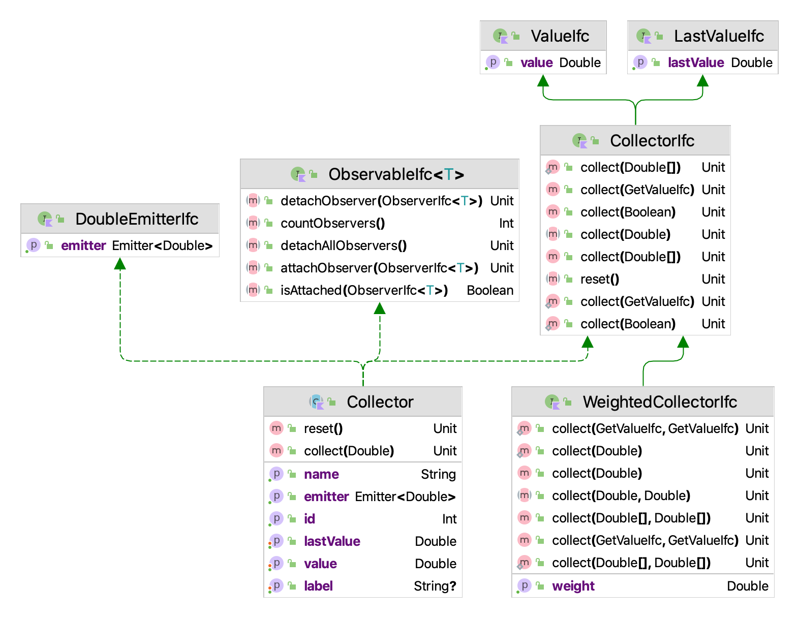
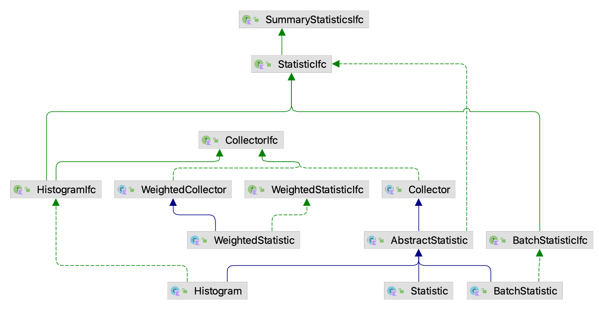
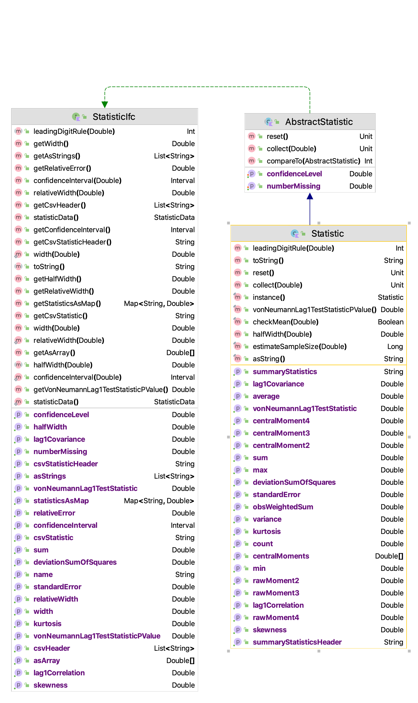
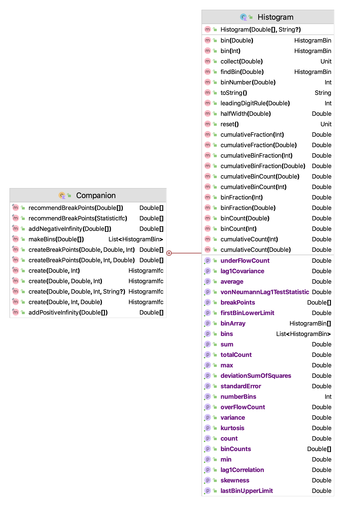
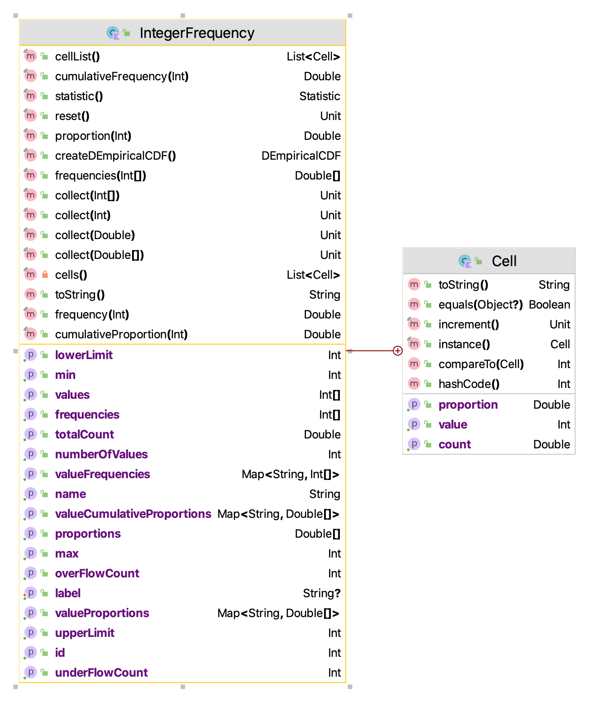
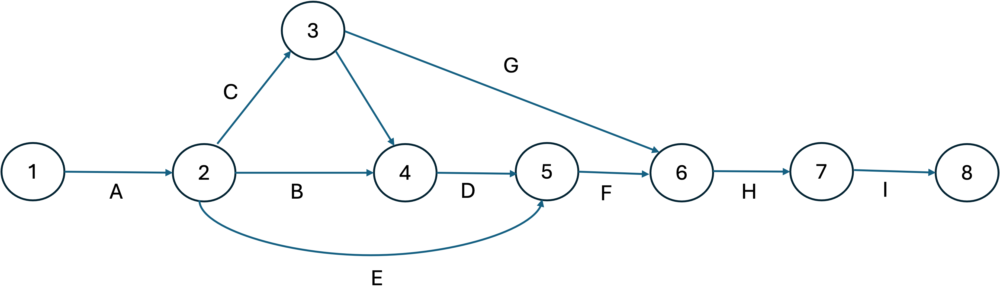
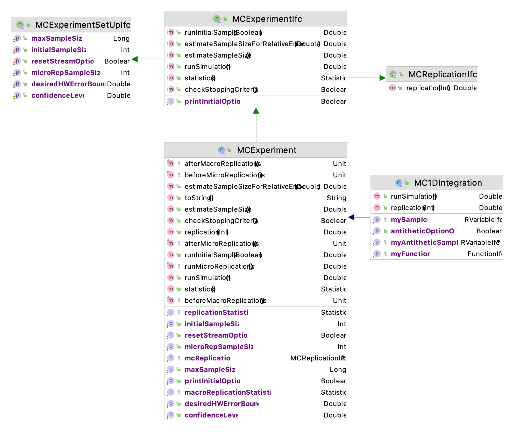
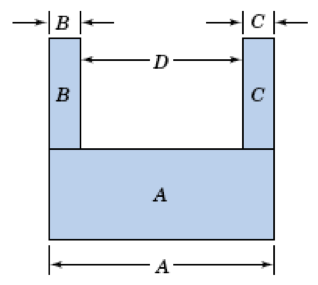
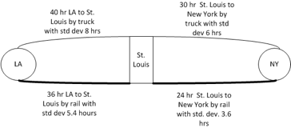

#'qt(0.975, 5)
qt(0.975,5)[1] 2.570582#' set alpha
alpha = 0.05
#'qt(1-(alpha/2, 5)
qt(1-(alpha/2),5)[1] 2.570582Learning Objectives
This chapter illustrates how to use the KSL for simple Monte-Carlo simulation experiments. The term Monte Carlo generally refers to the set of methods and techniques that estimate quantities by repeatedly sampling from models/equations represented in a computer. As such, this terminology is somewhat synonymous with computer simulation itself. The term Monte Carlo gets its origin from the Monte Carlo casino in the Principality of Monaco, where gambling and games of chance are well known. There is no one Monte Carlo method. Rather there is a collection of algorithms and techniques. In fact, the ideas of random number generation and random variate generation previously discussed form the foundation of Monte Carlo methods.
For the purposes of this chapter, we limit the term Monte Carlo methods to those techniques for generating and estimating the expected values of random variables, especially in regards to static simulation. In static simulation, the notion of time is relatively straightforward with respect to system dynamics. For a static simulation, time ‘ticks’ in a regular pattern and at each ‘tick’ the state of the system changes (new observations are produced).
A key requirement in performing a Monte Carlo simulation is the ability to collect and report statistics on observations generated by the simulation. The KSL supports the collection of statistics within the ksl.utilities.statistics package. Before proceeding with examples illustrating Monte Carlo methods, the following section overviews some of the statistical and reporting capabilities of the KSL.
This chapter provides a series of example Kotlin code that illustrates the use of KSL constructs for Monte Carlo methods. The full source code of the examples can be found in the accompanying KSLExamples project associated with the KSL repository. The files for each example of this chapter can be found here.
The KSL has a wide variety of classes that support statistic computations. A main theme in understanding the usage of the classes within the ksl.utilities.statistics package is the concept of collection. This concept is encapsulated within the CollectorIfc interface. The methods of the CollectorIfc interface are illustrated in Figure 3.1.

Something is a collector, if it implements the CollectorIfc interface. The implication is that those values presented to the various collect methods will be observed and tabulated into various quantities based on the presented values. The collect method has been overloaded to facilitate collection of double values, arrays of double values, and boolean values. A collector can be reset. Resetting a collector should set the state of the collector as if no values had been observed. Thus, resetting a collector should clear all previous collection results. The collector may or may not store any of the observations related to the collection process. By default, the standard approach taken is not to store the observations, but rather to summarize the observations in some manner. To facilitate the further use of the observed values, the base class, Collector is observable and will also emit observed values. Thus, other classes can be connected to a base observation process.
Figure 3.2 presents the major classes and interfaces within the statistics package. The CollectIfc interface is implemented within the abstract base class Collector, which serves as the basis for various concrete implementations of statistical collectors. There are two major kinds of statistics, one of which assumes that the values presented must be weighted, the WeightedStatisticIfc interface and the WeightedStatistic class. The other branch of classes, derived from AbstractStatistic do not necessarily have to be weighted. The main classes to be discussed in this chapter are Statistic and Histogram.

The Statistic class has a great deal of functionality. It accumulates summary statistics on the values presented to it via its collect methods. Recall also that since the Statistic class implements the CollectorIfc interface, you can use the reset() method to clear all accumulated statistics and reuse the Statistic instance. The major statistical quantities are found in the StatisticIfc interface.

As can be seen in Figure 3.3, the Statistic class not only computes the standard statistical quantities such as the count, average, and variance, it also has functionality to compute confidence intervals, skewness, kurtosis, the minimum, the maximum, and lag 1 covariance and correlation. The computed confidence intervals are based on the assumption that the observed data are normally distributed or that the sample size is large enough to justify using the central limit theorem to assume that the sampling distribution is normal. Thus, we can assume that the confidence intervals are approximate. The summary statistics are computed via efficient one pass algorithms that do not require any observed data to be stored. The algorithms are designed to minimize issues related to numerical precision within the calculated results. The toString() method of the Statistic class has been overridden to contain all of the computed values. Let’s illustrate the usage of the Statistic class with some code. In this code, first we create a normal random variable to be able to generate some data. Then, two statistics are created. The first statistic directly collects the generated values. The second statistic is designed to collect \(P(X\geq 20.0)\) by observing whether the generated value meets this criteria as defined by the boolean expression x >= 20.0.
Example 3.1 (Creating and Using Statistics) This example illustrates how to create instances of the Statistic class to collect randomly generated observations from a normal distribution.
fun main() {
// create a normal mean = 20.0, variance = 4.0 random variable
val n = NormalRV(20.0, 4.0, streamNum = 3)
// create a Statistic to observe the values
val stat = Statistic("Normal Stats")
val pGT20 = Statistic("P(X>=20")
// generate 100 values
for (i in 1..100) {
// getValue() method returns generated values
val x = n.value
stat.collect(x)
pGT20.collect(x >= 20.0)
}
println(stat)
println(pGT20)
val reporter = StatisticReporter(mutableListOf(stat, pGT20))
println(reporter.halfWidthSummaryReport())
}The results for the statistics collected directly on the observations from the toString() method are as follows.
ID 1
Name Normal Stats
Number 100.0
Average 20.370190128861807
Standard Deviation 2.111292233346322
Standard Error 0.2111292233346322
Half-width 0.4189261806189412
Confidence Level 0.95
Confidence Interval [19.951263948242865, 20.78911630948075]
Minimum 15.020744984423821
Maximum 25.33588436770212
Sum 2037.0190128861807
Variance 4.457554894588499
Weighted Average 20.370190128861797
Weighted Sum 2037.0190128861796
Sum of Weights 100.0
Weighted Sum of Squares 41935.76252316213
Deviation Sum of Squares 441.2979345642614
Last value collected 21.110736402119805
Last weighted collected 1.0
Kurtosis -0.534855387072145
Skewness 0.20030433873223502
Lag 1 Covariance -0.973414579833684
Lag 1 Correlation -0.22057990840016864
Von Neumann Lag 1 Test Statistic -2.2136062395518343
Number of missing observations 0.0
Lead-Digit Rule(1) -1Of course, this is probably more output than what you need, but you can use the properties and methods illustrated in Figure 3.3 to access specific desired quantities.
Notice that in the code example that the \(P(X \geq 20.0)\) is also collected. This is done by using the boolean expression x >= 20.0 within the collect() method. This expression evaluates to either true or false. The true values are presented as 1.0 and the false values as 0.0. Thus, this expression acts as an indicator variable and facilitates the estimation of probabilities. The results from the statistics can be pretty printed by using the StatisticReporter class, which takes a list of objects that implement the StatisticIfc interface and facilitates the writing and printing of various statistical summary reports.
val reporter = StatisticReporter(mutableListOf(stat, pGT20))
println(reporter.halfWidthSummaryReport())Half-Width Statistical Summary Report - Confidence Level (95.000)%
Name Count Average Half-Width
----------------------------------------------------------------------------------------------------
Normal Stats 100 20.3702 0.4189
P(X>=20 100 0.5100 0.0997
---------------------------------------------------------------------------------------------------- The KSLArrays object has a number of very useful methods that work on arrays and compute various statistical quantities.
indexOfMin(x: DoubleArray): Int - returns the index of the element that is smallest. If there are ties, the first found is returned.min(x: DoubleArray) : Double - returns the element that is smallest. If there are ties, the first found is returned.indexOfMax(x: DoubleArray) : Int - returns the index of the element that is largest If there are ties, the first found is returned.max(x: DoubleArray) : Double - returns the element that is largest. If there are ties, the first found is returned.countLessEqualTo(data: DoubleArray, x: Double) : Int - returns the count of the elements that are less than or equal to \(x\)countLessThan(data: DoubleArray, x: Double) : Int - returns the count of the elements that are less than \(x\)countGreaterEqualTo(data: DoubleArray, x: Double) : Int - returns the count of the elements that are greater than or equal to \(x\)countGreaterThan(data: DoubleArray, x: Double) : Int - returns the count of the elements that are greater than \(x\)orderStatistics(data: DoubleArray) : DoubleArray - returns a sorted copy of the supplied array ordered from smallest to largestThese functions have also been implemented as extension functions of the DoubleArray class. The Statistic class’s companion object also implements a few useful statistical summary functions.
estimateSampleSize(desiredHW: Double, stdDev: Double, level: Double) : Long - returns the approximate sample size necessary to reach the desired half-width at the specified confidence level given the estimate of the sample standard deviation.median(data: DoubleArray) : Double - the statistical median of the supplied arraypercentile(data: DoubleArray, p: Double) : Double - the \(p^{th}\) percentile of the dataquantile(data: DoubleArray, q: Double) : Double - the \(q^{th}\) percentile of the data based on definition 7 of quantiles as per the R definitions.As one can see, there is much functionality available for the collection and reporting of summary statistics. In the next section, we present an overview of distribution summaries involving histograms and frequencies.
A histogram tabulates counts and frequencies of observed data over a set of contiguous intervals. Let \(b_{0}, b_{1}, \cdots, b_{k}\) be the breakpoints (end points) of the class intervals such that \(\left(b_{0}, b_{1} \right], \left(b_{1}, b_{2} \right], \cdots, \left(b_{k-1}, b_{k} \right]\) form \(k\) disjoint and adjacent intervals. The intervals do not have to be of equal width. Also, \(b_{0}\) can be equal to \(-\infty\) resulting in interval \(\left(-\infty, b_{1} \right]\) and \(b_{k}\) can be equal to \(+\infty\) resulting in interval \(\left(b_{k-1}, +\infty \right)\). Define \(\Delta b_j = b_{j} - b_{j-1}\) and if all the intervals have the same width (except perhaps for the end intervals), \(\Delta b = \Delta b_j\). To count the number of observations that fall in each interval, we can use the count function: \[
c(\vec{x}\leq b) = \#\lbrace x_i \leq b \rbrace \; i=1,\ldots,n
\] \(c(\vec{x}\leq b)\) counts the number of observations less than or equal to \(x\). Let \(c_{j}\) be the observed count of the \(x\) values contained in the \(j^{th}\) interval \(\left(b_{j-1}, b_{j} \right]\). Then, we can determine \(c_{j}\) via the following equation: \[
c_{j} = c(\vec{x}\leq b_{j}) - c(\vec{x}\leq b_{j-1})
\] The key parameters of a histogram are the break points associated with the bins. Since knowledge of the data is often necessary to specify good break points, the Histogram class’s companion object provides a number of methods for creating break points and recommending break points based on sample data. For example, the function, createBreakPoints which has input parameters:

Figure 3.4 presents the methods of the Histogram class. The Histogram class is utilized in a very similar manner as the Statistic class by collecting observations. The observations are then tabulated into the bins. The Histogram class allows the user to tabulate the bin contents via the collect() methods inherited from the AbstractStatistic base class. Since data may fall below the first bin and after the last bin, the implementation also provides counts for those occurrences. Since a Histogram is a sub-class of AbstractStatistic, it also implements the StatisticIfc to provide summary statistics on the data tabulated within the bins.
In some cases, the client may not know in advance the appropriate settings for the number of bins or the width of the bins. In this situation, one can use the recommendBreakPoints function, which uses an array of data or statistics computed on the data. The function recommendBreakPoints computes a reasonable lower limit, number of bins, and bin width based on the statistics.
Example 3.2 (Histograms and Breakpoints) This example illustrates how to configure the breakpoints for a histogram and to use the histogram to observe observations from a random sample.
fun main() {
val d = ExponentialRV(2.0, streamNum = 1)
val data = d.sample(1000)
var bp = Histogram.recommendBreakPoints(data)
bp = Histogram.addPositiveInfinity(bp)
val h = Histogram(breakPoints = bp)
for (x in data) {
h.collect(x)
}
println(h)
val plot = h.histogramPlot()
plot.showInBrowser("Exponentially Distributed Data")
}Histogram: ID_4
-------------------------------------
Number of bins = 25
First bin starts at = 0.0
Last bin ends at = Infinity
Under flow count = 0.0
Over flow count = 0.0
Total bin count = 1000.0
Total count = 1000.0
-------------------------------------
Bin Range Count CumTot Frac CumFrac
1 [ 0.00, 0.75) = 333 333.0 0.333000 0.333000
2 [ 0.75, 1.50) = 198 531.0 0.198000 0.531000
3 [ 1.50, 2.25) = 150 681.0 0.150000 0.681000
4 [ 2.25, 3.00) = 112 793.0 0.112000 0.793000
5 [ 3.00, 3.75) = 75 868.0 0.075000 0.868000
6 [ 3.75, 4.50) = 48 916.0 0.048000 0.916000
7 [ 4.50, 5.25) = 28 944.0 0.028000 0.944000
8 [ 5.25, 6.00) = 19 963.0 0.019000 0.963000
9 [ 6.00, 6.75) = 16 979.0 0.016000 0.979000
10 [ 6.75, 7.50) = 1 980.0 0.001000 0.980000
11 [ 7.50, 8.25) = 5 985.0 0.005000 0.985000
12 [ 8.25, 9.00) = 2 987.0 0.002000 0.987000
13 [ 9.00, 9.75) = 4 991.0 0.004000 0.991000
14 [ 9.75,10.50) = 1 992.0 0.001000 0.992000
15 [10.50,11.25) = 2 994.0 0.002000 0.994000
16 [11.25,12.00) = 1 995.0 0.001000 0.995000
17 [12.00,12.75) = 3 998.0 0.003000 0.998000
18 [12.75,13.50) = 0 998.0 0.000000 0.998000
19 [13.50,14.25) = 0 998.0 0.000000 0.998000
20 [14.25,15.00) = 0 998.0 0.000000 0.998000
21 [15.00,15.75) = 0 998.0 0.000000 0.998000
22 [15.75,16.50) = 1 999.0 0.001000 0.999000
23 [16.50,17.25) = 0 999.0 0.000000 0.999000
24 [17.25,18.00) = 1 1000.0 0.001000 1.000000
25 [18.00,Infinity) = 0 1000.0 0.000000 1.000000
-------------------------------------
Statistics on data collected within bins:
-------------------------------------
ID 5
Name ID_4_Statistics
Number 1000.0
Average 1.9216605939547684
Standard Deviation 1.968265908806584
Standard Error 0.06224203312690073
Half-width 0.12214010773960152
Confidence Level 0.95
Confidence Interval [1.7995204862151668, 2.04380070169437]
Minimum 9.561427092951219E-4
Maximum 17.40419059595123
Sum 1921.6605939547685
Variance 3.8740706877702076
Deviation Sum of Squares 3870.1966170824376
Last value collected 8.548639846481285
Kurtosis 10.67406304701379
Skewness 2.5031667132444806
Lag 1 Covariance -0.12649071302321163
Lag 1 Correlation -0.032683278277103954
Von Neumann Lag 1 Test Statistic -0.8438384394483673
Number of missing observations 0.0
Lead-Digit Rule(1) -2
-------------------------------------Because it may be challenging to specify the breakpoints for a histogram, the KSL also provides the CachedHistogram class, which stores the observed data within a data cache (array) until sufficient data has been observed to provide reasonable breakpoints. The default size of the cache is 512 observations. If less than the cache size is observed, the KSL attempts to find the best breakpoints based on the recommendations found here. The following code illustrates the used of the CachedHistogram class.
fun main() {
val d = ExponentialRV(2.0, streamNum = 1)
val data = d.sample(1000)
val ch = CachedHistogram()
for (x in data) {
ch.collect(x)
}
println(ch)
val plot = ch.histogramPlot()
plot.showInBrowser("Exponentially Distributed Data")
}The KSL will also tabulate count frequencies when the values are only integers. This is accomplished with the IntegerFrequency class. Figure 3.5 indicates the methods of the IntegerFrequency class. The object can return information on the counts and proportions. It can even create a DEmpiricalCDF distribution based on the observed data.

In the following code example, an instance of the IntegerFrequency class is created. Then, an instance of a binomial random variable is used to generate a sample of 10,000 observations. The sample is then collected by the IntegerFrequency class’s collect() function. Notice the the collect() function can collect observations contained within an array.
Example 3.3 (Integer Frequency Tabulation) In this example, an instance of the IntegerFrequency class is used to tabulate observations from a binomial random variable. A bar chart representation of the frequency is also shown within a browser window.
fun main() {
val f = IntegerFrequency(name = "Frequency Demo")
val bn = BinomialRV(0.5, 100, streamNum = 2)
val sample = bn.sample(10000)
f.collect(sample)
println(f)
val plot = f.frequencyPlot()
plot.showInBrowser("Frequency Demo Plot")
}As can be noted in the output, only those integers that are actually observed are tabulated in terms of the count of the number of times the integer is observed and its proportion. The user does not have to specify the range of possible integers; however, instances of IntegerFrequency can be created that specify a lower and upper limit on the tabulated values. The overflow and underflow counts then tabulate when observations fall outside of the specified range.
Frequency Tabulation Frequency Demo
----------------------------------------
Number of cells = 37
Lower limit = -2147483648
Upper limit = 2147483647
Under flow count = 0
Over flow count = 0
Total count = 10000.0
Minimum value observed = 30
Maximum value observed = 69
----------------------------------------
Value Count Proportion
30 1.0 1.0E-4
33 3.0 3.0E-4
34 7.0 7.0E-4
35 10.0 0.001
36 17.0 0.0017
37 23.0 0.0023
38 48.0 0.0048
39 86.0 0.0086
40 101.0 0.0101
41 146.0 0.0146
42 221.0 0.0221
43 319.0 0.0319
44 371.0 0.0371
45 470.0 0.047
46 568.0 0.0568
47 684.0 0.0684
48 742.0 0.0742
49 768.0 0.0768
50 769.0 0.0769
51 813.0 0.0813
52 696.0 0.0696
53 680.0 0.068
54 599.0 0.0599
55 505.0 0.0505
56 386.0 0.0386
57 318.0 0.0318
58 237.0 0.0237
59 142.0 0.0142
60 107.0 0.0107
61 68.0 0.0068
62 38.0 0.0038
63 23.0 0.0023
64 13.0 0.0013
65 14.0 0.0014
66 4.0 4.0E-4
67 2.0 2.0E-4
69 1.0 1.0E-4
----------------------------------------Finally, the KSL provides the ability to define labeled states and to tabulate frequencies and proportions related to the visitation and transition between the states. This functionality is available in the StateFrequency class. The following code example creates an instance of StateFrequency by providing the number of states. The states are returned in a List and then 10,000 states are randomly selected from the list with equal probability using the KSLRandom functionality to randomly select from lists. The randomly selected state is then observed via the collect() method. State frequency tabulation can be useful within the context of a Markov Chain analysis.
Example 3.4 (State Frequency Tabulation) This example creates six states via the constructor parameter to the StateFrequency class. Then, the KSLRandom functionality to randomly select from a list is used to generate 10000 observations of the next state. Finally, a bar chart representation of the state frequency is also shown within a browser window.
fun main() {
val sf = StateFrequency(6)
val states = sf.states
for (i in 1..10000) {
val state = KSLRandom.randomlySelect(states)
sf.collect(state)
}
println(sf)
val plot = sf.frequencyPlot(proportions = true)
plot.showInBrowser("State Frequency Demo Plot")
}The output is what you would expect based on selecting the states with equal probability. Notice that the StateFrequency class not only tabulates the visits to the states, similar to IntegerFrequency, it also counts and tabulates the transitions between states. These detailed tabulations are available via the various methods of the class. See the documentation for further details.
State Frequency Tabulation for: Identity#1
State Labels
State{id=1, number=0, name='State:0'}
State{id=2, number=1, name='State:1'}
State{id=3, number=2, name='State:2'}
State{id=4, number=3, name='State:3'}
State{id=5, number=4, name='State:4'}
State{id=6, number=5, name='State:5'}
State transition counts
[288, 272, 264, 282, 265, 286]
[283, 278, 283, 286, 296, 266]
[286, 298, 263, 264, 247, 282]
[271, 263, 275, 279, 280, 294]
[274, 305, 273, 281, 296, 268]
[254, 277, 282, 270, 313, 255]
State transition proportions
[0.17380808690404345, 0.16415208207604104, 0.15932407966203982, 0.17018708509354255, 0.15992757996378998, 0.17260108630054316]
[0.16725768321513002, 0.16430260047281323, 0.16725768321513002, 0.1690307328605201, 0.17494089834515367, 0.15721040189125296]
[0.174390243902439, 0.18170731707317073, 0.1603658536585366, 0.16097560975609757, 0.15060975609756097, 0.1719512195121951]
[0.16305655836341756, 0.1582430806257521, 0.1654632972322503, 0.16787003610108303, 0.1684717208182912, 0.17689530685920576]
[0.1614614024749558, 0.17972893341190335, 0.16087212728344136, 0.16558632881555688, 0.17442545668827342, 0.15792575132586917]
[0.15384615384615385, 0.16777710478497881, 0.17080557238037553, 0.16353725015142337, 0.18958207147183526, 0.15445184736523318]
Frequency Tabulation Identity#1
----------------------------------------
Number of cells = 6
Lower limit = 0
Upper limit = 5
Under flow count = 0
Over flow count = 0
Total count = 10000
----------------------------------------
Value Count Proportion
0 1657 0.1657
1 1693 0.1693
2 1640 0.164
3 1662 0.1662
4 1697 0.1697
5 1651 0.1651
----------------------------------------In simulation, we often collect data that is correlated. That is, the data have a dependence structure. This causes difficulty in developing valid confidence intervals for the estimators as well as invalidated a number of other statistical procedures that require independent observations. Grouping the data into batches and computing the average of each batch is one methodology for mitigating the effect of dependence within the data on statistical inference procedures. The idea is that the average associated with each batch will tend to be less dependent, especially the larger the batch size. The method of batch means provides a mechanism for developing an estimator for \(Var\lbrack \bar{X} \rbrack\).
The method of batch means is based on observations \((X_{1}, X_{2}, X_{3}, \dots, X_{n})\). The idea is to group the output into batches of size, \(b\), such that the averages of the data within a batch are more nearly independent and possibly normally distributed.
\[\begin{multline*} \underbrace{X_1, X_2, \ldots, X_b}_{batch 1} \cdots \underbrace{X_{b+1}, X_{b+2}, \ldots, X_{2b}}_{batch 2} \cdots \\ \underbrace{X_{(j-1)b+1}, X_{(j-1)b+2}, \ldots, X_{jb}}_{batch j} \cdots \underbrace{X_{(k-1)b+1}, X_{(k-1)b+2}, \ldots, X_{kb}}_{batch k} \end{multline*}\]
Let \(k\) be the number of batches each of size \(b\), where, \(b = \lfloor \frac{n}{k}\rfloor\). Define the \(j^{th}\) batch mean (average) as:
\[ \bar{X}_j(b) = \dfrac{1}{b} \sum_{i=1}^b X_{(j-1)b+i} \] Each of the batch means are treated like observations in the batch means series. For example, if the batch means are re-labeled as \(Y_j = \bar{X}_j(b)\), the batching process simply produces another series of data, (\(Y_1, Y_2, Y_3, \ldots, Y_k\)) which may be more like a random sample. Why should they be more independent? Typically, in auto-correlated processes the lag-k auto-correlations decay rapidly as \(k\) increases. Since, the batch means are formed from batches of size \(b\), provided that \(b\) is large enough the data within a batch is conceptually far from the data in other batches. Thus, larger batch sizes are good for ensuring independence; however, as the batch size increases the number of batches decreases and thus variance of the estimator will increase.
To form a \((1 - \alpha)\)% confidence interval, we simply treat this new series like a random sample and compute approximate confidence intervals using the sample average and sample variance of the batch means series:
\[
\bar{Y}(k) = \dfrac{1}{k} \sum_{j=1}^k Y_j
\] The sample variance of the batch process is based on the \(k\) batches: \[
S_b^2 (k) = \dfrac{1}{k - 1} \sum_{j=1}^k (Y_j - \bar{Y}^2)
\] Finally, if the batch process can be considered independent and identically distributed the \(1-\alpha\) level confidence interval can be written as follows: \[
\bar{Y}(k) \pm t_{\alpha/2, k-1} \dfrac{S_b (k)}{\sqrt{k}}
\] The BatchStatistic class within the statistic package implements a basic batching process. The BatchStatistic class works with data as it is presented to its collect method. Since we do not know in advance how much data we have, the BatchStatistic class has rules about the minimum number of batches and the size of batches that can be formed. Theory indicates that we do not need to have a large number of batches and that it is better to have a relatively small number of batches that are large in size.
Three properties of the BatchStatistic class that are important are:
minNumBatches – This represents the minimum number of batches required. The default value for this attribute is determined by BatchStatistic. MIN_NUM_BATCHES, which is set to 20.minBatchSize – This represents the minimum size for forming initial batches. The default value for this attribute is determined by BatchStatistic. MIN_NUM_OBS_PER_BATCH, which is set to 16.maxNumBatchesMultiple – This represents a multiple of minimum number of batches which is used to determine the upper limit (maximum) number of batches. For example, if maxNumBatchesMultiple = 2 and the minNumBatches = 20, then the maximum number of batches we can have is 40 (2*20). The default value for this property is determined by BatchStatistic. MAX_BATCH_MULTIPLE, which is set to 2.The BatchStatistic class uses instances of the Statistic class to do its calculations. The bulk of the processing is done in two methods, collect() and collectBatch(). The collect() method simply uses an instance of the Statistic class (myStatistic) to collect statistics. When the amount of data collected (myStatistic.count) equals the current batch size (currentBatchSize) then the collectBatch() method is called to form a batch.
override fun collect(obs: Double) {
super.collect(obs)
myTotNumObs = myTotNumObs + 1.0
myValue = obs
myStatistic.collect(myValue)
if (myStatistic.count == currentBatchSize.toDouble()) {
collectBatch()
}
}Referring to the collectBatch() method in the following code, the batches that are formed are recorded in an array called bm. After recording the batch average, the statistic is reset for collecting the next batch of data. The number of batches is recorded and if this has reached the maximum number of batches (as determined by the batch multiple calculation), we rebatch the batches back down to the minimum number of batches by combining adjacent batches according to the batch multiple.
private fun collectBatch() {
// increment the current number of batches
numBatches = numBatches + 1
// record the average of the batch
bm[numBatches] = myStatistic.average
// collect running statistics on the batches
myBMStatistic.collect(bm[numBatches])
// reset the within batch statistic for next batch
myStatistic.reset()
// if the number of batches has reached the maximum then rebatch down to
// min number of batches
if (numBatches == maxNumBatches) {
numRebatches++
currentBatchSize = currentBatchSize * minNumBatchesMultiple
var j = 0 // within batch counter
var k = 0 // batch counter
myBMStatistic.reset() // clear for collection across new batches
// loop through all the batches
for (i in 1..numBatches) {
myStatistic.collect(bm[i]) // collect across batches old batches
j++
if (j == minNumBatchesMultiple) { // have enough for a batch
//collect new batch average
myBMStatistic.collect(myStatistic.average)
k++ //count the batches
bm[k] = myStatistic.average // save the new batch average
myStatistic.reset() // reset for next batch
j = 0
}
}
numBatches = k // k should be minNumBatches
myStatistic.reset() //reset for use with new data
}
}There are a variety of procedures that have been developed that will automatically batch the data as it is collected. The KSL has a batching algorithm based on the procedure implemented within the Arena simulation language. When a sufficient amount of data has been collected batches are formed. As more data is collected, additional batches are formed until \(k=40\) batches are collected. When 40 batches are formed, the algorithm collapses the number of batches back to 20, by averaging each pair of batches. This has the net effect of doubling the batch size. This process is repeated as more data is collected, thereby ensuring that the number of batches is between 20 and 39. In addition, the procedure also computes the lag-1 correlation so that independence of the batches can be tested.
The BatchStatistic class also provides a public reformBatches() method to allow the user to rebatch the batches to a user supplied number of batches. Since the BatchStatistic class implements the StatisticalAccessorIfc interface, it can return the sample average, sample variance, minimum, maximum, etc. of the batches. Within the discrete-event modeling constructs of the KSL, batching can be turned on to collect batch statistics during a replication. The use of these constructs will be discussed when the discrete-event modeling elements of the KSL are presented.
The following code illustrates how to create and use a BatchStatistic.
Example 3.5 (Batch Statistic Collection) This example code illustrates how to configure an instance of the BatchStatistic class to collect and report statistics associated with the batching process.
fun main() {
val d = ExponentialRV(2.0)
// number of observations
val n = 1000
// minimum number of batches permitted
// there will not be less than this number of batches
val minNumBatches = 40
// minimum batch size permitted
// the batch size can be no smaller than this amount
val minBatchSize = 25
// maximum number of batch multiple
// The multiple of the minimum number of batches
// that determines the maximum number of batches
// e.g. if the min. number of batches is 20
// and the max number batches multiple is 2,
// then we can have at most 40 batches
val maxNBMultiple = 2
// In this example, since 40*25 = 1000, the batch multiple does not matter
val bm = BatchStatistic(minNumBatches, minBatchSize, maxNBMultiple)
for (i in 1..n) {
bm.collect(d.value)
}
println(bm)
val bma = bm.batchMeans
var i = 0
for (x in bma) {
println("bm($i) = $x")
i++
}
// this re-batches the 40 down to 10
val reformed = bm.reformBatches(10)
println(Statistic(reformed))
}The ksl.utilities.statistic package defines a lot of functionality. Here is a summary of some of the useful classes and interfaces.
CollectorIfc defines a set of collect() methods for collecting data. The method is overridden to permit the collection of a wide variety of data types. The collect() method is designed to collect values and a weight associated with the value. This allows the collection of weighted statistics. Collector is an abstract base class for building concrete sub-classes.DoubleArraySaver defines methods for saving observed data to arrays.WeightedStatisticIfc defines statistics that are computed on weighted data values. WeightedStatistic is a concrete implementation of the interface.AbstractStatistic is an abstract base class for defining statistics. Sub-classes of AbstractStatistic compute summary statistics of some kind.Histogram defines a class to collect statistics and tabulate data into bins.Statistic is a concrete implementation of AbstractStatistic allowing for a multitude of summary statistics.BatchStatistic is also a concrete implementation of AbstractStatistic that provides for summarizing data via a batching process.IntegerFrequency tabulates integer values into a frequencies by observed values, similar to a histogram.StateFrequency facilitates defining labeled states and tabulating visitation and transition statistics.StatisticXY collects statistics on \((x,y)\) pairs computing statistics on the \(x\) and \(y\) values separately, as well as the covariance and correlation between the observations within a pair.BoxPlotSummary produces the summary statistics necessary for the construction of a box plot.OLSRegression, RegressionResultsIfc, and RegressionData facilitate performing multiple variable regression. The basic use of these classes is illustrated in Section 10.2.4 of Chapter 10.BootstrapSampler facilitates the bootstrap statistical analysis technique. Its use is describe in Section 9.1 of Chapter 9.The most important class within the statistics package is probably the Statistic class. This class summarizes the observed data into summary statistics such as: minimum, maximum, average, variance, standard deviation, lag-1 correlation, and count. In addition, confidence intervals can be formed on the observations based on the student-t distribution. Finally, there are useful companion object methods for computing statistics on arrays and for estimating sample sizes. The reader is encourage to review the KSL documentation for all of the functionality, including the ability to write nicely printed statistical results.
In the remaining sections of this chapter, we will illustrate the collection of statistics on simple Monte Carlo models. This begins in the next section by estimating the area of a simple one-dimensional function.
In this example, we illustrate one of the fundamental uses of Monte Carlo methods: estimating the area of a function. Suppose we have some function, \(g(x)\), defined over the range \(a \leq x \leq b\) and we want to evaluate the integral:
\[ \theta = \int\limits_{a}^{b} g(x) \mathrm{d}x\]
Monte Carlo methods allow us to evaluate this integral by considering the problem as an estimation problem. It turns out that the problem can be translated into estimating the expected value of a well-chosen random variable. While a number of different choices for the random variable exist, we will pick one of the simplest for illustrative purposes. Define \(Y\) as follows with \(X \sim U(a,b)\):
\[ Y = \left(b-a\right)g(X) \tag{3.1}\]
Notice that \(Y\) is defined in terms of \(g(X)\), which is also a random variable. Because a function of a random variable is also a random variable, this makes \(Y\) a random variable . Thus, the expectation of \(Y\) can be computed as follows:
\[ E\lbrack Y \rbrack = \left(b-a\right)E\lbrack g(X)\rbrack \tag{3.2}\]
Now, let us derive,\(E\lbrack g(X) \rbrack\). By definition,
\[ E_{X}\lbrack g(x) \rbrack = \int\limits_{a}^{b} g(x)f_{X}(x)\mathrm{d}x\]
And, the probability density function for a \(X \sim U(a,b)\) random variable is:
\[f_{X}(x) =
\begin{cases}
\frac{1}{b-a} & a \leq x \leq b\\
0 & \text{otherwise}
\end{cases}\]
Therefore,
\[ E_{X}\lbrack g(x) \rbrack = \int\limits_{a}^{b} g(x)f_{X}(x)\mathrm{d}x = \int\limits_{a}^{b} g(x)\frac{1}{b-a}\mathrm{d}x \]
Substituting into Equation 3.2, yields,
\[\begin{aligned} E\lbrack Y \rbrack & = E\lbrack \left(b-a\right)g(X) \rbrack = \left(b-a\right)E\lbrack g(X) \rbrack\\ & = \left(b-a\right)\int\limits_{a}^{b} g(x)\frac{1}{b-a}\mathrm{d}x \\ & = \int\limits_{a}^{b} g(x)\mathrm{d}x = \theta\end{aligned}\]
Therefore, by estimating the expected value of \(Y\), we can estimate the desired integral. From basic statistics, we know that a good estimator for \(E\lbrack Y \rbrack\) is the sample average of observations of \(Y\). Let \(Y_{1}, Y_{2},...Y_{n}\) be a random sample of observations of \(Y\). Let \(X_{i}\) be the \(i^{th}\) observation of \(X\). Substituting each \(X_{i}\) into Equation 3.1 yields the \(i^{th}\) observation of \(Y\),
\[Y_{i} = \left(b-a\right)g(X_{i})\]
Then, the sample average of is:
\[\begin{aligned} \bar{Y}(n) & = \frac{1}{n}\sum\limits_{i=1}^{n} Y_{i} = \left(b-a\right)\frac{1}{n}\sum\limits_{i=1}^{n}\left(b-a\right)g(X_{i})\\ & = \left(b-a\right)\frac{1}{n}\sum\limits_{i=1}^{n}g(X_{i})\\\end{aligned}\]
where \(X_{i} \sim U(a,b)\). Thus, by simply generating \(X_{i} \sim U(a,b)\), plugging the \(X_{i}\) into the function of interest, \(g(x)\), taking the average over the values and multiplying by \(\left(b-a\right)\), we can estimate the integral. This works for any integral and it works for multi-dimensional integrals. While this discussion is based on a single valued function, the theory scales to multi-dimensional integration through the use of multi-variate distributions.
Example 3.6 (Area Estimation) Suppose that we want to estimate the area under \(f(x) = x^{\frac{1}{2}}\) over the range from \(1\) to \(4\). That is, we want to evaluate the integral:
\[\theta = \int\limits_{1}^{4} x^{\frac{1}{2}}\mathrm{d}x = \dfrac{14}{3}=4.6\bar{6}\]
According to the previously presented theory, we need to generate \(X_i \sim U(1,4)\) and then compute \(\bar{Y}\), where \(Y_i = (4-1)\sqrt{X{_i}}= 3\sqrt{X{_i}}\). In addition, for this simple example, we can easily check if our Monte Carlo approach is working because we know the true area.
fun main() {
val a = 1.0
val b = 4.0
val ucdf = UniformRV(a, b, streamNum = 3)
val stat = Statistic("Area Estimator")
val n = 100 // sample size
for (i in 1..n) {
val x = ucdf.value
val gx = sqrt(x)
val y = (b - a) * gx
stat.collect(y)
}
System.out.printf("True Area = %10.3f %n", 14.0 / 3.0)
System.out.printf("Area estimate = %10.3f %n", stat.average)
println("Confidence Interval")
println(stat.confidenceInterval)
}True Area = 4.667
Area estimate = 4.781
Confidence Interval
[4.608646560421988, 4.952515649272401]Notice that the previous examples created the random variable outside of the loop that is used to generate values. It may not be an error to create random variables within loops, but it is generally bad practice and inefficient in terms of object creation. If you see yourself creating many instances of an object and then using it only one time before it is discarded, you should reconsider what you are doing.
Because confidence intervals may form the basis for decision making, you can use the confidence interval half-width in determining the sample size. A review of these and other statistical concepts will be the focus of the next section.
The simulation models that have been illustrated have estimated the quantity of interest with a point estimate (i.e. \(\bar{X}\)). For example, in the previous section, we can easily compute the true area under the curve as \(4.6\bar{6}\); however, the point estimate returned by the simulation was a value of 4.781, based on 100 samples. Thus, there is sampling error in our estimate. The key question examined in this section is how to control the sampling error in a simulation experiment. The approach that we will take is to determine the number of samples so that we can have high confidence in our point estimate. In order to address these issues, we need to review some basic statistical concepts in order to understand the meaning of sampling error.
Let \(x_{i}\) represent the \(i^{th}\) observations in a sample, \(x_{1}, x_{2},...x_{n}\) of size \(n\). Represent the random variables in the sample as \(X_{1}, X_{2},...X_{n}\). The random variables form a random sample, if 1) the \(X_{i}\) are independent random variables and 2) every \(X_{i}\) has the same probability distribution. Let’s assume that these two assumptions have been established. Denote the unknown cumulative distribution function of \(X\) as \(F(x)\) and define the unknown expected value and variance of \(X\) with \(E[X] = \mu\) and \(Var[X] = \sigma^2\), respectively.
A statistic is any function of the random variables in a sample. Any statistic that is used to estimate an unknown quantity based on the sample is called an estimator. What would be a good estimator for the quantity \(E[X] = \mu\)? Without going into the details of the meaning of statistical goodness, one should remember that the sample average is generally a good estimator for \(E[X] = \mu\). Define the sample average as follows:
\[ \bar{X} = \frac{1}{n}\sum_{i=1}^{n}X_i \tag{3.3}\]
Notice that \(\bar{X}\) is a function of the random variables in the sample and therefore it is also a random variable. This makes \(\bar{X}\) a statistic, since it is a function of the random variables in the sample.
Any random variable has a corresponding probability distribution. The probability distribution associated with a statistic is called its sampling distribution. The sampling distribution of a statistic can be used to form a confidence interval on the point estimate associated with the statistic. The point estimate is simply the value obtained from the statistic once the data has been realized. The point estimate for the sample average is computed from the sample:
\[\bar{x} = \frac{1}{n}\sum_{i=1}^{n}x_i\]
A confidence interval expresses a degree of certainty associated with a point estimate. A specific confidence interval does not imply that the parameter \(\mu\) is inside the interval. In fact, the true parameter is either in the interval or it is not within the interval. Instead you should think about the confidence level \(1-\alpha\) as an assurance about the procedure used to compute the interval. That is, a confidence interval procedure ensures that if a large number of confidence intervals are computed each based on \(n\) samples, then the proportion of the confidence intervals that actually contain the true value of \(\mu\) should be close to \(1-\alpha\). The value \(\alpha\) represents risk that the confidence interval procedure will produce a specific interval that does not contain the true parameter value. Any one particular confidence interval will either contain the true parameter of interest or it will not. Since you do not know the true value, you can use the confidence interval to assess the risk of making a bad decision based on the point estimate. You can be confident in your decision making or conversely know that you are taking a risk of \(\alpha\) of making a bad decision. Think of \(\alpha\) as the risk that using the confidence interval procedure will get you fired. If we know the sampling distribution of the statistic, then we can form a confidence interval procedure.
Under the assumption that the sample size is large enough such that the distribution of \(\bar{X}\) is normally distributed then you can form an approximate confidence interval on the point estimate, \(\bar{x}\). Assuming that the sample variance:
\[ S^{2}(n) = \frac{1}{n-1}\sum_{i=1}^{n}(X_i-\bar{X})^2 \tag{3.4}\]
is a good estimator for \(Var[X] = \sigma^2\), then a \((1-\alpha)100\%\) two-sided confidence interval estimate for \(\mu\) is:
\[ \bar{x} \pm t_{1-(\alpha/2), n-1} \dfrac{s}{\sqrt{n}} \tag{3.5}\]
where \(t_{p, \nu}\) is the \(100p\) percentage point of the Student t-distribution with \(\nu\) degrees of freedom. The spreadsheet function T.INV(p, degrees freedom) computes the left-tailed Student-t distribution value for a given probability and degrees of freedom. That is, \(t_{p, \nu} = T.INV(p,\nu)\). The spreadsheet tab labeled Student-t in the spreadsheet that accompanies this chapter illustrates functions related to the Student-t distribution. Thus, in order to compute \(t_{1-(\alpha/2), n-1}\), use the following formula:
\[t_{1-(\alpha/2), n-1} = T.INV(1-(\alpha/2),n-1)\] The T.INV.2T(\(\alpha\), \(\nu\)) spreadsheet function directly computes the upper two-tailed value. That is,
\[ t_{1-(\alpha/2), n-1} =T.INV.2T(\alpha, n-1) \] Within the statistical package R, this computation is straight-forward by using the \(t_{p, n} = qt(p,n)\) function.
\[ t_{p, n} = qt(p,n) \]
#'qt(0.975, 5)
qt(0.975,5)[1] 2.570582#' set alpha
alpha = 0.05
#'qt(1-(alpha/2, 5)
qt(1-(alpha/2),5)[1] 2.570582Using the KSL, we can compute the quantile of the Student-T distribution via the following:
fun main(){
val level = 0.95
val dof = 5.0
val alpha = 1.0 - level
val p = 1.0 - alpha / 2.0
val t: Double = StudentT.invCDF(dof, p)
println("p = $p dof = $dof t-value = $t")
}With results:
p = 0.975 dof = 5.0 t-value = 2.5705818445939186The confidence interval for a point estimator can serve as the basis for determining how many observations to have in the sample. From Equation 3.5, the quantity:
\[ h = t_{1-(\alpha/2), n-1} \dfrac{s}{\sqrt{n}} \tag{3.6}\]
is called the half-width of the confidence interval. You can place a bound, \(\epsilon\), on the half-width by picking a sample size that satisfies:
\[ h = t_{1-(\alpha/2), n-1} \dfrac{s}{\sqrt{n}} \leq \epsilon \tag{3.7}\]
We call \(\epsilon\) the margin of error for the bound. Unfortunately, \(t_{1-(\alpha/2), n-1}\) depends on \(n\), and thus Equation 3.7 is an iterative equation. That is, you must try different values of \(n\) until the condition is satisfied. Within this text, we call this method for determining the sample size the Student-T iterative method.
Alternatively, the required sample size can be approximated using the normal distribution. Solving Equation 3.7 for \(n\) yields:
\[n \geq \left(\dfrac{t_{1-(\alpha/2), n-1} \; s}{\epsilon}\right)^2\]
As \(n\) gets large, \(t_{1-(\alpha/2), n-1}\) converges to the \(100(1-(\alpha/2))\) percentage point of the standard normal distribution \(z_{1-(\alpha/2)}\). This yields the following approximation:
\[ n \geq \left(\dfrac{z_{1-(\alpha/2)} s}{\epsilon}\right)^2 \tag{3.8}\]
Within this text, we refer to this method for determining the sample size as the normal approximation method. This approximation generally works well for large \(n\), say \(n > 50\). Both of these methods require an initial value for the standard deviation. This computation is implemented in the function, estimateSampleSize of the Statisitic class’s companion object.
/**
* Estimate the sample size based on a normal approximation
*
* @param desiredHW the desired half-width (must be bigger than 0)
* @param stdDev the standard deviation (must be bigger than or equal to 0)
* @param level the confidence level (must be between 0 and 1)
* @return the estimated sample size
*/
fun estimateSampleSize(desiredHW: Double, stdDev: Double, level: Double): Long {
require(desiredHW > 0.0) { "The desired half-width must be > 0" }
require(stdDev >= 0.0) { "The desired std. dev. must be >= 0" }
require(!(level <= 0.0 || level >= 1.0)) { "Confidence Level must be (0,1)" }
val a = 1.0 - level
val a2 = a / 2.0
val z = Normal.stdNormalInvCDF(1.0 - a2)
val m = z * stdDev / desiredHW * (z * stdDev / desiredHW)
return (m + .5).roundToLong()
}In order to use either the normal approximation method or the Student-T iterative method, you must have an initial value for, \(s\), the sample standard deviation. The simplest way to get an initial estimate of \(s\) is to make a small initial pilot sample (e.g. \(n_0=5\)). Given a value for \(s\) you can then set a desired bound and use the formulas. The bound is problem and performance measure dependent and is under your subjective control. You must determine what bound is reasonable for your given situation. One thing to remember is that the bound is squared in the denominator for evaluating \(n\). Thus, very small values of \(\epsilon\) can result in very large sample sizes.
Example 3.7 (Determining the Sample Size) Suppose we are required to estimate the output from a simulation so that we are 99% confidence that we are within \(\pm 0.1\) of the true population mean. After taking a pilot sample of size \(n=10\), we have estimated \(s=6\). What is the required sample size?
We will use Equation 3.8 to determine the sample size requirement. For a 99% confidence interval, we have \(\alpha = 0.01\) and \(\alpha/2 = 0.005\). Thus, \(z_{1-0.005} = z_{0.995} = 2.5758293064439264\). Because the margin of error, \(\epsilon\) is \(0.1\), we have that,
\[n \geq \left(\dfrac{z_{1-(\alpha/2)}\; s}{\epsilon}\right)^2 = \left(\dfrac{2.5758293064439264 \times 6}{0.1}\right)^2 = 23885.63 \approx 23886\]
The following KSL code will easily compute the sample size.
fun main() {
val desiredHW = 0.1
val s0 = 6.0
val level = 0.99
val n = Statistic.estimateSampleSize(
desiredHW = desiredHW,
stdDev = s0,
level = level
)
println("Sample Size Determination")
println("desiredHW = $desiredHW")
println("stdDev = $s0")
println("Level = $level")
println("recommended sample size = $n")
}Sample Size Determination
desiredHW = 0.1
stdDev = 6.0
Level = 0.99
recommended sample size = 23886If the quantity of interest is a proportion, then a different method can be used. In particular, a \(100\times(1 - \alpha)\%\) large sample two sided confidence interval for a proportion, \(p\), has the following form:
\[ \hat{p} \pm z_{1-(\alpha/2)} \sqrt{\dfrac{\hat{p}(1 - \hat{p})}{n}} \tag{3.9}\]
where \(\hat{p}\) is the estimate for \(p\). From this, you can determine the sample size via the following equation:
\[ n = \left(\dfrac{z_{1-(\alpha/2)}}{\epsilon}\right)^{2} \hat{p}(1 - \hat{p}) \tag{3.10}\]
Again, a pilot run is necessary for obtaining an initial estimate of \(\hat{p}\), for use in determining the sample size. If no pilot run is available, then \(\hat{p} =0.5\) is often assumed as a worse case approximation.
If you have more than one performance measure of interest, you can use these sample size techniques for each of your performance measures and then use the maximum sample size required across the performance measures. Now, let’s illustrate these methods based on a small simulation.
To facilitate some of the calculations related to determining the sample size for a simulation experiment, I have constructed a spreadsheet called SampleSizeDetermination.xlsx, which is found in the book support files for this chapter. You may want to utilize that spreadsheet as you go through this and subsequent sections.
Using a simple example, we will illustrate how to determine the sample size necessary to estimate a quantity of interest with a high level of confidence.
Example 3.8 (Sample Size Example) Suppose that we want to simulate a normally distributed random variable, \(X\), with \(E[X] = 10\) and \(Var[X] = 16\). From the simulation, we want to estimate the true population mean with 99 percent confidence for a half-width \(\pm 0.50\) margin of error. In addition to estimating the population mean, we want to estimate the probability that the random variable exceeds 8. That is, we want to estimate, \(p= P(X>8)\). We want to be 95% confident that our estimate of \(P(X>8)\) has a margin of error of \(\pm 0.05\). What are the sample size requirements needed to meet the desired margins of error?
Using simulation for this example is for illustrative purposes. Naturally, we actually know the true population mean and we can easily compute the \(p= P(X>8)\). for this situation. However, the example will illustrate sample size determination, which is an important planning requirement for simulation experiments.
Let \(X\) represent the unknown random variable of interest. Then, we are interested in estimating \(E[X]=\mu\) and \(p = P(X > 8)\). To estimate these quantities, we generate a random sample, \((X_1,X_2,...,X_n)\). \(E[X]\) can be estimated using \(\bar{X}\). To estimate a probability it is useful to define an indicator variable. An indicator variable has the value 1 if the condition associated with the probability is true and has the value 0 if it is false. To estimate \(p\), define the following indicator variable:
\[ Y_i = \begin{cases} 1 & X_i > 8\\ 0 & X_i \leq 8 \\ \end{cases} \] This definition of the indicator variable \(Y_i\) allows \(\bar{Y}\) to be used to estimate \(p\). Recall the definition of the sample average \(\bar{Y}\). Since \(Y_{i}\) is a \(1\) only if \(X_i > 8\), then the \(\sum \nolimits_{i=1}^{n} Y_{i}\) simply adds up the number of \(1\)’s in the sample. Thus, \(\sum\nolimits_{i=1}^{n} Y_{i}\) represents the count of the number of times the event \(X_i > 8\) occurred in the sample. Call this \(\#\lbrace X_i > 8\rbrace\). The ratio of the number of times an event occurred to the total number of possible occurrences represents the proportion. Thus, an estimator for \(p\) is:
\[ \hat{p} = \bar{Y} = \frac{1}{n}\sum_{i=1}^{n}Y_i = \frac{\#\lbrace X_i > 8\rbrace}{n} \] Therefore, computing the average of an indicator variable will estimate the desired probability. The code for this situation is quite simple:
fun main() {
val rv = NormalRV(10.0, 16.0, streamNum = 3)
val estimateX = Statistic("Estimated X")
val estOfProb = Statistic("Pr(X>8)")
val r = StatisticReporter(mutableListOf(estOfProb, estimateX))
val n0 = 20 // sample size
for (i in 1..n0) {
val x = rv.value
estimateX.collect(x)
estOfProb.collect(x > 8)
}
println(r.halfWidthSummaryReport())
}In the code, an instance of Statistic is used to observe values of the quantity \((x > 8)\). This quantity is actually a logical condition which will evaluate to true (1) or false (0) given the value of \(x\). Thus, the Statistic will be recording observations of 1’s and 0’s. Because the Statistic computes the average of the values that it “collects”, we will get an estimate of the probability. Thus, the quantity, \((x > 8)\) is an indicator variable for the desired event. Using a Statistic to estimate a probability in this manner is quite effective.
Now, in more realistic simulation situations, we would not know the true population mean and variance. Thus, in solving this problem, we will ignore that information. To apply the previously discussed sample size determination methods, we need estimates of \(\sigma = \sqrt{Var[X]}\) and \(p = P(X>8)\). In order to get estimates of these quantities, we need to run our simulation experiment; however, in order to run our simulation experiment, we need to know how many observations to make. This is quite a catch-22 situation!
To proceed, we need to run our simulation model for a pilot experiment. From a small number of samples (called a pilot experiment, pilot run or pilot study), we will estimate \(\sigma\) and \(p = P(X>8)\) and then use those estimates to determine how many samples we need to meet the desired margins of error. We will then re-run the simulation using the recommended sample size.
The natural question to ask is how big should your pilot sample be? In general, this depends on how much it costs for you to collect the sample. Within a simulation experiment context, generally, cost translates into how long your simulation model takes to execute. For this small problem, the execution time is trivial, but for large and complex simulation models the execution time may be in hours or even days. A general rule of thumb is between 10 and 30 observations. For this example, we will use an initial pilot sample size, \(n_0 = 20\).
Running the model for the 20 replications yields the following results.
| Performance Measures | Average | 95% Half-Width |
|---|---|---|
| Pr(X>8) | 0.80 | 0.1921 |
| Estimated X | 12.2484 | 2.2248 |
Notice that the confidence interval for the true mean is \((10.0236,14.4732)\) with a half-width of \(2.2248\), which exceeds the desired margin of error, \(\epsilon = 0.5\). Notice also that this particular confidence interval happens to not contain the true mean \(E[X] = 10\). To determine the sample size so that we get a half-width that is less than \(\epsilon = 0.1\) with 99% confidence, we can use Equation 3.8. In order to do this, we must first have an estimate of the sample standard deviation, \(s\). Since Table 3.1 reports a half-width for a 95% confidence interval, we need to use Equation 3.6 and solve for \(s\) in terms of \(h\). Rearranging Equation 3.6 yields,
\[ s = \dfrac{h\sqrt{n}}{t_{1-(\alpha/2), n-1}} \tag{3.11}\]
Using the results from Table 3.1 and \(\alpha = 0.05\) in Equation 3.11 yields,
\[ s_0 = \dfrac{h\sqrt{n_0}}{t_{1-(\alpha/2), n_0-1}} = \dfrac{2.2248\sqrt{20}}{t_{0.975, 19}}= \dfrac{2.2248\sqrt{20}}{2.093024}=4.7536998 \]
Now, we can use Equation 3.8 to determine the sample size requirement. For a 99% confidence interval, we have \(\alpha = 0.01\) and \(\alpha/2 = 0.005\). Thus, \(z_{0.995} = 2.576\). Because the margin of error, \(\epsilon\) is \(0.5,\) we have that,
\[n \geq \left(\dfrac{z_{1-(\alpha/2)}\; s}{\epsilon}\right)^2 = \left(\dfrac{2.5758293064439264 \times 4.7536998}{0.5}\right)^2 = 599.73 \approx 600\] To determine the sample size for estimating \(p=P(X>8)\) with 95% confidence to \(\pm 0.1\), we can use Equation 3.10
\[ n = \left(\dfrac{z_{1-(\alpha/2)}}{\epsilon}\right)^{2} \hat{p}(1 - \hat{p})=\left(\dfrac{z_{0.975}}{0.05}\right)^{2} (0.80)(1 - 0.80)=\left(\dfrac{1.96}{0.05}\right)^{2} (0.80)(0.20) = 245.86 \approx 246 \]
All of these calculations can be easily accomplished using Kotlin code as follows:
fun main() {
val rv = NormalRV(10.0, 16.0, streamNum = 3)
val estimateX = Statistic("Estimated X")
val estOfProb = Statistic("Pr(X>8)")
val r = StatisticReporter(mutableListOf(estOfProb, estimateX))
val n0 = 20 // sample size
for (i in 1..n0) {
val x = rv.value
estimateX.collect(x)
estOfProb.collect(x > 8)
}
println(r.halfWidthSummaryReport())
val desiredHW = 0.5
val s0 = estimateX.standardDeviation
val level = 0.99
val n = Statistic.estimateSampleSize(
desiredHW = desiredHW,
stdDev = s0,
level = level
)
println("Sample Size Determination")
println("desiredHW = $desiredHW")
println("stdDev = $s0")
println("Level = $level")
println("recommended sample size = $n")
println()
val m = Statistic.estimateProportionSampleSize(
desiredHW = 0.05,
pEst = estOfProb.average,
level = 0.95
)
println("Recommended sample size for proportion = $m")
}The results match the values computed from the equations.
Sample Size Determination
desiredHW = 0.5
stdDev = 4.753707020199372
Level = 0.99
recommended sample size = 600
Recommended sample size for proportion = 246By using the maximum of \(\max{(246, 600)=600}\), we can re-run the simulation for this number of replications. Doing so, yields,
| Performance Measures | Average | 95% Half-Width |
|---|---|---|
| Pr(X>8) | 0.7117 | 0.0363 |
| Estimated X | 10.2712 | 0.3284 |
As can be seen in Table 3.2, the half-width values meet the desire margins of error. It may be possible that the margins of error might not be met. This suggests that more than \(n = 600\) observations is needed to meet the margin of error criteria. Equation 3.8 and Equation 3.10 are only approximations and based on a pilot sample. Thus, if there was considerable sampling error associated with the pilot sample, the approximations may be inadequate.
As can be noted from this example in order to apply the normal approximation method for determining the sample size based on the pilot run, we need to compute the initial sample standard deviation, \(s_0\), from the initial reported half-width, \(h\). This requires the use of Equation 3.11 to first compute the value of \(s\) from \(h\). We can avoid this calculation by using the half-width ratio method for determining the sample size.
Let \(h_0\) be the initial value for the half-width from the pilot run of \(n_0\) replications. Then, rewriting Equation 3.6 in terms of the pilot data yields:
\[ h_0 = t_{1-(\alpha/2), n_0 - 1} \dfrac{s_0}{\sqrt{n_0}} \] Solving for \(n_0\) yields:
\[ n_0 = t_{1-(\alpha/2), n_0 -1}^{2} \dfrac{s_{0}^{2}}{h_{0}^{2}} \tag{3.12}\]
Similarly for any \(n\), we have:
\[ n = t_{1-(\alpha/2), n-1}^{2} \dfrac{s^{2}}{h^{2}} \tag{3.13}\]
Taking the ratio of \(n_0\) to \(n\) (Equation 3.12 and Equation 3.13) and assuming that \(t_{1-(\alpha/2), n-1}\) is approximately equal to \(t_{1-(\alpha/2), n_0 - 1}\) and \(s^2\) is approximately equal to \(s_0^2\), yields,
\[n \cong n_0 \dfrac{h_0^2}{h^2} = n_0 \left(\frac{h_0}{h}\right)^2\]
This is the half-width ratio equation.
\[ n \geq n_0 \left(\frac{h_0}{h}\right)^2 \tag{3.14}\]
The issue that we face when applying Equation 3.14 is that Table 3.1 only reports the 95% confidence interval half-width. Thus, to apply Equation 3.14 the value of \(h_0\) will be based on an \(\alpha = 0.05\). If the desired half-width, \(h\), is required for a different confidence level, e.g. a 99% confidence interval, then you must first translate \(h_0\) to be based on the desired confidence level or set the confidence level for the StatisticalReporter to be 99%. To compute the 95% half-width from Table 3.1, you can compute \(s\) from Equation 3.11 and then recomputing the actual half-width, \(h\), for the desired confidence level.
Using the results from Table 3.1 and \(\alpha = 0.05\) in Equation 3.11 we already know that \(s_0 = 4.7536998\) for a 95% confidence interval. Thus, for a 99% confidence interval, where \(\alpha = 0.01\) and \(\alpha/2 = 0.005\), we have:
\[ h_0 = t_{1-(\alpha/2), n_0-1} \dfrac{s_0}{\sqrt{n_0}}= t_{0.995, 19}\dfrac{4.7536998}{\sqrt{20}}=2.861\dfrac{4.7536998}{\sqrt{20}}=3.041127 \] Now, we can apply Equation 3.14 to this problem with the desire half-width bound \(\epsilon = 0.5 = h\):
\[ n \geq n_0 \left(\frac{h_0}{h}\right)^2=20\left(\frac{3.041127}{h}\right)^2=20\left(\frac{3.041127}{0.5}\right)^2=739.87 \cong 740 \]
We see that for this pilot sample, the half-width ratio method recommends a substantially larger sample size, \(740\) versus \(600\). In practice, the half-width ratio method tends to be conservative by recommending a larger sample size. We will see another example of these methods within the next section.
Based on these examples, you should have a basic understanding of how a simulation experiment can be performed to meet a desired margin of error. In general, simulation models are much more interesting than this simple example.
This section presents an application of Monte Carlo methods to the estimation of the probability of winning the game of “craps” as played in Las Vegas. The following example will illustrate how to generate random variates and collect statistics in a useful manner.
Example 3.9 (Simulating Craps) The basic rules of the game are as follows: one player, the “shooter”, rolls a pair of dice. If the outcome of that roll is a 2, 3, or 12, the shooter immediately loses; if it is a 7 or an 11, the shooter wins. In all other cases, the number the shooter rolls on the first toss becomes the “point”, which the shooter must try to duplicate on subsequent rolls. If the shooter manages to roll the point before rolling a 7, the shooter wins; otherwise the shooter loses. It may take several rolls to determine whether the shooter wins or loses. After the first roll, only a 7 or the point have any significance until the win or loss is decided. Using the KSL random and statistic packages give answers and corresponding estimates to the following questions. Be sure to report your estimates in the form of confidence intervals.
The solution to this problem involves the use of the Statistic class to collect the probability that the shooter will win and for the expected number of rolls. The following code illustrates the approach. The DUniformRV class is used to represent the two dice. Two statistics are created to estimate the probability of winning and to estimate the expected number of rolls required to decide a win or a loss. A for loop is use to simulate 5000 games. For each game, the logic of winning, losing or matching the first point is executed. When the game is ended the instances of Statistic are used to report the statistical results.
fun main() {
val d1 = DUniformRV(1, 6, streamNum = 3)
val d2 = DUniformRV(1, 6, streamNum = 4)
val probOfWinning = Statistic("Prob of winning")
val numTosses = Statistic("Number of Toss Statistics")
val numGames = 5000
for (k in 1..numGames) {
var winner = false
val point = d1.value.toInt() + d2.value.toInt()
var numberoftoss = 1
if (point == 7 || point == 11) {
// automatic winner
winner = true
} else if (point == 2 || point == 3 || point == 12) {
// automatic loser
winner = false
} else { // now must roll to get point
var continueRolling = true
while (continueRolling) {
// increment number of tosses
numberoftoss++
// make next roll
val nextRoll = d1.value.toInt() + d2.value.toInt()
if (nextRoll == point) {
// hit the point, stop rolling
winner = true
continueRolling = false
} else if (nextRoll == 7) {
// crapped out, stop rolling
winner = false
continueRolling = false
}
}
}
probOfWinning.collect(winner)
numTosses.collect(numberoftoss.toDouble())
}
val reporter = StatisticReporter()
reporter.addStatistic(probOfWinning)
reporter.addStatistic(numTosses)
println(reporter.halfWidthSummaryReport())
}As we can see from the results of the statistics reporter, the probability of winning is just a little less than 50 percent.
Half-Width Statistical Summary Report - Confidence Level (95.000)%
Name Count Average Half-Width
--------------------------------------------------------------------------------
Prob of winning 5000 0.4960 0.0139
Number of Toss Statistics 5000 3.4342 0.0856
-------------------------------------------------------------------------------- Now let’s look at a slightly more complex static simulation.
The news vendor model is a classic inventory model that allows for the modeling of how much to order for a decision maker facing uncertain demand for an upcoming period of time. It takes on the news vendor moniker because of the context of selling newspapers at a newsstand. The vendor must anticipate how many papers to have on hand at the beginning of a day so as to not run short or have papers left over. This idea can be generalized to other more interesting situations (e.g. air plane seats). Discussion of the news vendor model is often presented in elementary textbooks on inventory theory. The reader is referred to (Muckstadt and Sapras 2010) for a discussion of this model.
The basic model is considered a single period model; however, it can be extended to consider an analysis covering multiple (or infinite) future periods of demand. The representation of the costs within the modeling offers a number of variations.
Let \(D\) be a random variable representing the demand for the period. Let \(F(d)= P[D \leq d]\) be the cumulative distribution function for the demand. Define \(G(q,D)\) as the profit at the end of the period when \(q\) units are ordered at the start of the period with \(D\) units of demand. The parameter \(q\) is the decision variable associated with this model. Depending on the value of \(q\) chosen by the news vendor, a profit or loss will occur.
There are two cases to consider \(D \geq q\) or \(D < q\). That is, when demand is greater than or equal to the amount ordered at the start of the period and when demand is less than the amount ordered at the start of the period. If \(D \geq q\) the news vendor runs out of items, and if \(D < q\) the news vendor will have items left over.
In order to develop a profit model for this situation, we need to define some model parameters. In addition, we need to determine the amount that we might be short and the amount we might have left over in order to determine the revenue or loss associated with a choice of \(q\). Let \(c\) be the purchase cost. This is the cost that the news vendor pays the supplier for the item. Let \(s\) be the selling price. This is the amount that the news vendor charges customers. Let \(u\) be the salvage value (i.e. the amount per unit that can be received for the item after the planning period). For example, the salvage value can be the amount that the news vendor gets when selling a left over paper to a recycling center. We assume that selling price \(>\) purchase cost \(>\) salvage value.
Consider the context of a news vendor planning for the day. What is the possible amount sold? If \(D\) is the demand for the day and we start with \(q\) items, then the most that can be sold is \(\min(D, q)\). That is, if \(D\) is bigger than \(q\), you can only sell \(q\). If \(D\) is smaller than \(q\), you can only sell \(D\).
What is the possible amount left over (available for salvage)? If \(D\) is the demand and we start with \(q\), then there are two cases: 1) demand is less than the amount ordered (\(D < q\)) or 2) demand is greater than or equal to the amount ordered (\(D \geq q\)). In case 1, we will have \(q-D\) items left over. In case 2, we will have \(0\) left over. Thus, the amount left over at the end of the day is \(\max(0, q-D)\). Since the news vendor buys \(q\) items for \(c\), the cost of the items for the day is \(c \times q\). Thus, the profit has the following form:
\[ G(D,q) = s \times \min(D, q) + u \times \max(0, q-D) - c \times q \tag{3.15}\]
In words, the profit is equal to the sales revenue plus the salvage revenue minus the ordering cost. The sales revenue is the selling price times the amount sold. The salvage revenue is the salvage value times the amount left over. The ordering cost is the cost of the items times the amount ordered. To find the optimal value of \(q\), we should try to maximize the expected profit. Since \(D\) is a random variable, \(G(D,q)\) is also a random variable. Taking the expected value of both sides of Equation 3.15, yields:
\[g(q) = E[G(D,q)] = sE[\min(D, q)] + uE[\max(0, q-D)] - cq\]
Whether or not this equation can be optimized depends on the form of the distribution of \(D\); however, simulation can be used to estimate this expected value for any given \(q\). Let’s look at an example.
Example 3.10 (Sly’s BBQ Wings) Sly’s convenience store sells BBQ wings for 25 cents a piece. They cost 15 cents a piece to make. The BBQ wings that are not sold on a given day are purchased by a local food pantry for 2 cents each. Assuming that Sly decides to make 30 wings a day, what is the expected revenue for the wings provided that the demand distribution is as show in Table 3.3.
| \(d_{i}\) | 5 | 10 | 40 | 45 | 50 | 55 | 60 |
|---|---|---|---|---|---|---|---|
| \(f(d_{i})\) | 0.1 | 0.2 | 0.3 | 0.2 | 0.1 | 0.05 | 0.05 |
| \(F(d_{i})\) | 0.1 | 0.3 | 0.6 | 0.8 | 0.9 | 0.95 | 1.0 |
The code for the news vendor problem will require the generation of the demand from BBQ Wing demand distribution. In order to generate from this distribution, the DEmpiricalRV class should be used. Since the cumulative distribution has already been computed, it is straight forward to write the inputs for the DEmpiricalRV class.
fun main() {
val q = 30.0 // order qty
val s = 0.25 //sales price
val c = 0.15 // unit cost
val u = 0.02 //salvage value
val values = doubleArrayOf(5.0, 10.0, 40.0, 45.0, 50.0, 55.0, 60.0)
val cdf = doubleArrayOf(0.1, 0.3, 0.6, 0.8, 0.9, 0.95, 1.0)
val dCDF = DEmpiricalRV(values, cdf, streamNum = 3)
val stat = Statistic("Profit")
val n = 100.0 // sample size
var i = 1
while (i <= n) {
val d = dCDF.value
val amtSold = minOf(d, q)
val amtLeft = maxOf(0.0, q - d)
val g = s * amtSold + u * amtLeft - c * q
stat.collect(g)
i++
}
System.out.printf("%s \t %f %n", "Count = ", stat.count)
System.out.printf("%s \t %f %n", "Average = ", stat.average)
System.out.printf("%s \t %f %n", "Std. Dev. = ", stat.standardDeviation)
System.out.printf("%s \t %f %n", "Half-width = ", stat.halfWidth)
println((stat.confidenceLevel * 100).toString() + "% CI = " + stat.confidenceInterval)
}Running the model for 100 days results in the following output.
Count = 100.000000
Average = 1.677500
Std. Dev. = 2.201324
Half-width = 0.436790
95.0% CI = [1.2407095787617952, 2.1142904212382048]The following example illustrates how to model a simple inspection process that has individual items being defective and includes the random selection of items for inspection.
Example 3.11 (Simple Inspection Process) A manufacturing process has a simple inspection process. The process produces items and places them in boxes with four items per box. The manufacturing process has a defect rate of 15%. That is, the probability of an individual item being defective is 0.15. Assume that the chance of an item being defective is independent of any other item being defective. An inspector tests each box by randomly sampling one item from the box. If the selected item is good, the box is passed; if the selected item is defective, the box is rejected. We are interested in estimating the expected number of boxes that the inspector will look at before the first box is rejected.
This situation could be modeled using the concepts of probability theory; however, we will simulate the process to illustrate the use of KSL constructs. The probability that an item is defective can be modeled with a Bernoulli random variable with probability of success equal 0.15. In the following code, we model the inspection process with a function that counts the number of boxes that are inspected until the first rejected box.
fun main() {
val itemRV = BernoulliRV(probOfSuccess = 0.15, streamNum = 3)
val itemsPerBox = 4
val stat = Statistic("Num Until Rejection")
val sampleSize = 100
for (i in 1..sampleSize) {
val countBoxes = numUntilFirstRejection(itemRV, itemsPerBox)
stat.collect(countBoxes)
}
print(String.format("%s \t %f %n", "Count = ", stat.count))
print(String.format("%s \t %f %n", "Average = ", stat.average))
print(String.format("%s \t %f %n", "Std. Dev. = ", stat.standardDeviation))
print(String.format("%s \t %f %n", "Half-width = ", stat.halfWidth))
println((stat.confidenceLevel * 100).toString() + "% CI = " + stat.confidenceInterval)
}
/**
* This function counts the number of boxes inspected until the first
* box is found that has a randomly selected item that is defective.
*/
fun numUntilFirstRejection(itemRV: BernoulliRV, itemsPerBox: Int): Double {
require(itemsPerBox >= 1) { "There must be at least 1 item per box" }
var count = 0.0
do {
count++
// randomly generate the box
val box = itemRV.sample(itemsPerBox)
// randomly sample from the box
val inspection = KSLRandom.randomlySelect(box)
// stops if bad = 1.0 is found, continues if good = 0.0 is found
} while (inspection != 1.0)
return count
}Notice that first a sample from the Bernoulli random variable is obtained. The size of this sample is the number of items per box (equal to 4 in this example). The returned sample array contains elements with values 1.0 or 0.0, with 1.0 indicating a defective item. Then, the KSLRandom functionality is used to randomly select from the sample “box” an element (item). If the item is good, the sampling continues with a new box. If the selected item is bad, then the sampling stops and returns the number of sample boxes inspected until the first bad box is found.
Count = 100.000000
Average = 5.710000
Std. Dev. = 4.688897
Half-width = 0.930379
95.0% CI = [4.779621063279056, 6.640378936720944]The results indicate that on average about 5.71 boxes are inspected until the first box is rejected.
A stochastic activity network (SAN) is a common modeling paradigm often used to represent project networks and other forms of network modeling. An activity network consists of a set of activities that have an ordered precedence indicating the dependence between the activities. For example, an activity C might not be able to start until both activities A and B are completed. Thus, (A, B) precede C in the network. A common question in such networks is how to determine the critical path or the longest path in the network. The following example will illustrate how to simulate a simple SAN to estimate the expected length of the critical path and estimate probabilities associated with time to complete the network.
Example 3.12 (Project Network) Consider a project consisting of nine jobs (A, B, \(\cdots\), I) with the precedence relationships and activity times. The table provides the minimum, mode, and maximum for each activity. We will assume that the activity times can be modeled using a triangular distribution with the appropriate parameters.
| Job | Predecessors | Min | Mode | Max |
|---|---|---|---|---|
| A | - | 2 | 5 | 8 |
| B | A | 6 | 9 | 12 |
| C | A | 6 | 7 | 8 |
| D | B,C | 1 | 4 | 7 |
| E | A | 7 | 8 | 9 |
| F | D,E | 5 | 14 | 17 |
| G | C | 3 | 12 | 21 |
| H | F,G | 3 | 6 | 9 |
| I | H | 5 | 8 | 11 |

Develop a simulation model that will estimate the expected time to completion for the project. In addition, estimate the probability that the project will be completed within 50 days. Finally, estimate the probability that the project will be completed between 42 and 48 days.
The key to modeling this situation is representing the data associated with the network. The longest path in the network will depend upon the random activity times. A simple approach to the determining the longest path in the network is to enumerate the paths. Then, we can randomly generate the time associated with each activity. From the random times, we can determine the length of each path. If we know the length of each path, then we can compute the path that is the longest.
In the following code, we represent the activities and the associated activity time (triangular) distributions using a map.
val activityRVs = mapOf<String, TriangularRV>(
"A" to TriangularRV(2.0, 5.0, 8.0, streamNum = 2),
"B" to TriangularRV(6.0, 9.0, 12.0, streamNum = 3),
"C" to TriangularRV(6.0, 7.0, 8.0, streamNum = 4),
"D" to TriangularRV(1.0, 4.0, 7.0, streamNum = 5),
"E" to TriangularRV(7.0, 8.0, 9.0, streamNum = 6),
"F" to TriangularRV(5.0, 14.0, 17.0, streamNum = 7),
"G" to TriangularRV(3.0, 12.0, 21.0, streamNum = 8),
"H" to TriangularRV(3.0, 6.0, 9.0, streamNum = 9),
"I" to TriangularRV(5.0, 8.0, 11.0, streamNum = 10),
)If you look closely at Figure 3.6, you can discern that there are four unique paths through the network. Since the paths are clear for this example, we can represent the paths with a list of lists.
val paths = mutableListOf<List<String>>(
listOf("A", "B", "D", "F", "H", "I"),
listOf("A", "E", "F", "H", "I"),
listOf("A", "C", "D", "F", "H", "I"),
listOf("A", "B", "C", "G", "H", "I"),
)This data structure will allow each path to be enumerated to determine the length of the network once the random activity times have been realized. In general, for large networks, this enumeration approach will not be the best approach and specialized algorithms will be required to find the longest path.
Now that we have the data structures for holding the activity times and the paths, we can write functions that can take advantage of the data structures. The first function that we will write will randomly generate the activity times for the network. That is, in essence, randomly generate the time for each arc (activity) of the network. This can be accomplished by iterating through the activity map.
fun generateActivityTimes(activities: Map<String, TriangularRV>) : Map<String, Double> {
val map = mutableMapOf<String, Double>()
for ((name, rv) in activities){
map[name] = rv.value
}
return map
}In this code, the activities map is iterated for each activity and the associated random variable is called to generate the associated activity time. The realized activity time is stored in an outgoing map that holds the activity name and its activity time. This map holds a realized network. From a realized network, we can enumerate the paths to determine the longest path and thus the completion time. This idea is implemented in the following function.
fun timeToCompletion(activityTimes: Map<String, Double>, paths: List<List<String>>): Double {
val times = mutableListOf<Double>()
for (path in paths) {
var pathTime = 0.0
for (activity in path) {
pathTime = pathTime + activityTimes[activity]!!
}
times.add(pathTime)
}
return times.max()
}In this code, each path in the provided list of paths is enumerated. The time to complete the path is the sum of the individual activity times on the path. Once we have all the total path lengths computed, we can easily use the max() function of the Kotlin collection library to determine the maximum time, which is returned as the time to complete the realization of the sample network. Now, we are ready to simulate many instances of the network to collect statistics associated with the expected performance and probability of completion. The following code puts these ideas into action.
val timeToCompleteStat = Statistic("Time to Completion")
val probLT50Days = Statistic("P(T<=50)")
val probWith42and48Days = Statistic("P(42<=T<=48)")
val interval = Interval(42, 48)
val sampleSize = 1000
for (i in 1..sampleSize) {
val a = generateActivityTimes(activityRVs)
val t = timeToCompletion(a, paths)
timeToCompleteStat.collect(t)
probLT50Days.collect(t <= 50)
probWith42and48Days.collect(interval.contains(t))
}
val sr = StatisticReporter(mutableListOf(timeToCompleteStat, probLT50Days, probWith42and48Days))
println(sr.halfWidthSummaryReport())In this code, we randomly generate 1000 networks and thus 1000 completion times. As in previous examples, instances of the Statistic class are used to collect and report statistics for the simulation.
Statistical Summary Report
| Name | Count | Average | Half-Width |
|---|---|---|---|
| Time to Completion | 1000.0 | 47.78885659544101 | 0.23712135354990163 |
| P(T<=50) | 1000.0 | 0.7089999999999989 | 0.028200797908293447 |
| P(42<=T<=48) | 1000.0 | 0.4499999999999999 | 0.030887260143834475 |
The results indicate that on average it takes about 47.8 days to complete the network. In the following section, we explore generalizing the execution of Monte Carlo experiments.
Because running Monte-Carlo experiments is very common the KSL has provided some classes to support simple experimentation on Monte-Carlo problems within the ksl.utilities.mcintegration package. Figure 3.7 illustrates the classes within the package.

A Monte-Carlo experiment is conceptualized as a two-step process: 1) an initial pilot sample, and 2) the sampling to meet the desired half-width criteria. The initial pilot sample determines based on the equations of Section 3.3.2 how many samples are needed to meet the criteria. Then, the remaining samples are executed until a maximum number of samples is reached or the half-width criteria is met.
The sampling is performed in the form of micro and macro replications. A micro replication observes the desired quantity for a pre-determined sample size. Then, the micro replications are repeated for a pre-determined overall number of macro replications. Let’s use some notation to represent these concepts.
Let \(r\) be the number of micro replications and let \(n\) be the number of macro replications. Let \(Y_{ij}\) be the \(i^{th}\) observation of the \(r\) micro replications and let \(j\) be the \(j^{th}\) observation of the \(n\) macro replications. Let \(\bar{Y}_{\cdot j} = \frac{1}{r}\sum_{i=1}^{r}Y_{ij}\) be the sample average for the \(j^{th}\) macro replication. Let \(k\) be the sample size of the initial set of macro replications. Thus, they form a random sample of size \(k\), as follows:
\[ (\bar{Y}_{\cdot 1},\bar{Y}_{\cdot 2}, \dots, \bar{Y}_{\cdot k} ) \]
From this sample, the number of macro replications needed to meet the criteria is determined using Equation 3.8. The reason that this sample is formed from the \(r\) micro replications is to help ensure that the observations \(\bar{Y}_{\cdot j}\) are approximately normally distributed. According to the Central Limit Theorem, sample averages tend to be normally distributed as the number of observations within the sample increase towards infinity.
The simulation is performed in two loops: an outer loop called the macro replications and an inner loop called the micro replications. The user specifies a desired (half-width) error bound (\(\epsilon\)), an initial sample size (\(k\)), and a maximum sample size limit (\(M\)) for the macro replications. The initial sample size is used to generate a pilot sample from which an estimate of the number of samples needed to meet the half-width criteria. Let’s call the estimated sample size, \(m\). If \(m > k\), then an additional \((m-k)\) samples will be taken or until the error criteria is met or the maximum number of samples \(M\) is reached. Thus, if \(m > M\), and the error criterion is not met during the macro replications a total of \(M\) observations will be observed. Thus, the total number of macro replications will not exceed \(M\). If the error criteria is met before \(M\) is reached, the number of macro replications \(n\) will be somewhere between \(k\) and \(M\). For each of the \(n\), macro replications, a set of micro replications will be executed. Let \(r\) be the number of micro replications. The micro replications represent the evaluation of \(r\) observations of the Monte-Carlo evaluation. Thus, the total number of observations will be \(n \times r\).
By default, the number of macro replications should be relatively small and the number of micro replications large. Specific settings will be problem dependent. The default initial sample size, \(k\) is 30, with a maximum number of macro replications of \(M = 10000\). The default half-width error bound is \(0.001\). The default setting of the number of micro replications, \(r\), is 100. Again, these are all adjustable by the user via the properties of the MCExperiment class. The initial pilot sample is executed automatically as part of the overall sampling; however, using the runInitialSample() method, the user can just execute the initial sample and review the results before setting up the overall sampling. In the following code, we re-implement the news vendor problem using the MCExperiment class.
To use the MCExperiment class the user can either subclass MCExperiment or provide a function that represents a replication of an individual observation. This can be done by using the MCReplicationIfc functional interface.
fun interface MCReplicationIfc {
/**
* @param j the current replication number. Could be used to implement more advanced
* sampling that needs the current replication number. For example, antithetic sampling.
*/
fun replication(j: Int): Double
}A Kotlin functional interface allows the function to be supplied easily as a parameter of a function. An interface with only one abstract method is called a functional interface, or a Single Abstract Method (SAM) interface. Using the functional programming constructs of Kotlin the user can supply a lambda expression as the function, implement the interface, or reference a class or object method that has the same functional signature. In the example presented here, for simplicity and clarity, we implement the interface.
class NewsVendor(var demand: RVariableIfc) : MCReplicationIfc {
var orderQty = 30.0 // order qty
set(value) {
require(value > 0)
field = value
}
var salesPrice = 0.25 //sales price
set(value) {
require(value > 0)
field = value
}
var unitCost = 0.15 // unit cost
set(value) {
require(value > 0)
field = value
}
var salvageValue = 0.02 //salvage value
set(value) {
require(value > 0)
field = value
}
override fun replication(j: Int): Double {
val d = demand.value
val amtSold = minOf(d, orderQty)
val amtLeft = maxOf(0.0, orderQty - d)
return salesPrice * amtSold + salvageValue * amtLeft - unitCost * orderQty
}
}Notice the function, replication which implements computation of the profit equation for the news vendor problem. The key input parameters of the problem have also been implemented as properties of the class so that different problem instances can be easily created. The user of the class must provide a random variable to represent the demand. The running of the experiment is implemented in the following code.
Example 3.13 (News Vendor Via MCExperiment) This example illustrates how to use the MCExperiment class to run a Monte-Carlo experiment for the news vendor problem.
fun main() {
val values = doubleArrayOf(5.0, 10.0, 40.0, 45.0, 50.0, 55.0, 60.0)
val cdf = doubleArrayOf(0.1, 0.3, 0.6, 0.8, 0.9, 0.95, 1.0)
val dCDF = DEmpiricalRV(values, cdf, streamNum = 3)
val nv = NewsVendor(dCDF)
val exp = MCExperiment(nv)
exp.desiredHWErrorBound = 0.01
exp.runSimulation()
println(exp)
}This code creates an instance of the news vendor problem and supplies the same demand distribution used in the previous section. The instance of NewsVendor, which implements the MCReplicationIfc interface is supplied to the MCExperiment as a constructor parameter. Then the desired half-width bound is set and the simulation executed.
Monte Carlo Simulation Results
initial Sample Size = 30
max Sample Size = 10000
reset Stream OptionOn = false
Estimated sample size needed to meet criteria = 2045.0
desired half-width error bound = 0.01
actual half-width = 0.00999980532316225
error gap (hw - bound) = -1.946768377510122E-7
-----------------------------------------------------------
The half-width criteria was met!
-----------------------------------------------------------
**** Sampling results ****
Number of macro replications executed = 2047.0
Number of micro replications per macro replication = 100
Total number of observations = 204700.0
ID 2
Name Statistic_1
Number 2047.0
Average 1.5049719101123593
Standard Deviation 0.23069885711869198
Standard Error 0.005099017725643279
Half-width 0.00999980532316225
Confidence Level 0.95
Confidence Interval [1.494972104789197, 1.5149717154355216]As we can see from the results, the desired half-width criteria of 0.01 was met based on 2047 macro replications.
The KSL also provides a class called MC1DIntegration that is a subclass of MCExperiment which facilitates the evaluation of 1-dimensional integrals as previously illustrated in Section 3.2. For that situation a function and a sampling distribution can be provided.
The following code illustrates the use of the MC1DIntegration class to evaluate the following integral:
\[\theta = \int\limits_{0}^{\pi} \sin (x) \mathrm{d}x\] With \(g(x) = \sin(x)\), we need to specify a sampling distribution, \(f(x)\) over the range of \([0, \pi]\). By choosing, \(f(x)\) as the uniform distribution over \([0, \pi]\), we have that
\[f_{X}(x) =
\begin{cases}
\frac{1}{\pi} & 0 \leq x \leq \pi\\
0 & \text{otherwise}
\end{cases}\]
Thus,
\[h(x) =
\begin{cases}
\pi \sin(x) & 0 \leq x \leq \pi\\
0 & \text{otherwise}
\end{cases}\]
In the following code, notice that we multiply by \(\pi\) in the functional evaluation to account for the range of sampling.
Example 3.14 (1-D Integration via MCExperiment) This example illustrates how to use the MCExperiment class to run a Monte-Carlo experiment on a one-dimensional integration problem.
fun main() {
class SinFunc : FunctionIfc {
override fun f(x: Double): Double {
return Math.PI * sin(x)
}
}
val f = SinFunc()
val mc = MC1DIntegration(f, UniformRV(0.0, Math.PI, streamNum = 3))
println()
mc.runSimulation()
println(mc)
}The results based on the default settings do not meet the desired half-width criteria. We leave it as an exercise for the reader to further explore this problem.
Monte Carlo Simulation Results
initial Sample Size = 30
max Sample Size = 10000
reset Stream OptionOn = false
Estimated sample size needed to meet criteria = 63129.0
desired half-width error bound = 0.001
actual half-width = 0.0025130156865938546
error gap (hw - bound) = 0.0015130156865938546
-----------------------------------------------------------
The half-width criteria was not met!
The user should consider one of the following:
1. increase the desired error bound using desiredHWErrorBound
2. increase the number of macro replications using maxSampleSize
2. increase the number of micro replications using microRepSampleSize
-----------------------------------------------------------
**** Sampling results ****
Number of macro replications executed = 10000.0
Number of micro replications per macro replication = 100
Total number of observations = 1000000.0
ID 2
Name Statistic_1
Number 10000.0
Average 1.9998788102129432
Standard Deviation 0.09754281939519215
Standard Error 9.754281939519214E-4
Half-width 0.0025130156865938546
Confidence Level 0.99
Confidence Interval [1.9973657945263494, 2.002391825899537]In this chapter, learned how to use KSL constructs to collect statistics within Monte Carlo models. We use the KSL’s random variate generation methods and the functionality for collecting and reporting statistics to easily setup and perform Monte Carlo experiments. The quantities to be estimated from the Monte Carlo experiments are random variables. Thus, the Monte Carlo procedure generates a random sample of from the experiment. The random sample from the experiment provides estimates such as the sample average and other statistical quantities. For example, to estimate a probability, we used an indicator variable and computed statistics on the observations of the indicator variable.
When executing a Monte Carlo experiment, we should report the sampling error or a confidence interval on the quantities estimated from the Monte Carlo experiment. In addition, because we are performing an experiment, we should plan the sampling by understanding the sampling error and if possible, pre-plan the required sample size. Besides the random variate generation and statistical classes within the KSL, we can use the KSL’s MCExperiment class to execute Monte Carlo experiments.
In addition, we explored how to develop models in for which time is not a significant factor. In the case of the news vendor problem, where we simulated each day’s demand, time advanced at regular intervals. In the case of the area estimation problem, time was not a factor in the simulation. These types of simulation experiments are often termed static. In the next chapter, we begin our exploration of simulation experiments where time is an integral component in driving the behavior of the system. In addition, we will see that time will not necessarily advance at regular intervals (e.g. hour 1, hour 2, etc.). This will be the focus of the rest of the book.
Exercise 3.1 Compute the required sample size necessary to ensure a 95% confidence interval with a half-width of no larger than 30 minutes for the total time to produce a part. Given the half-width of the system time after 10 runs is 47.25, compute the sample size using the half-width ratio method. Round the answer to the next highest integer.
Exercise 3.2 Compute the required sample size necessary to ensure a 95% confidence interval with a half-width of no larger than 30 minutes for the total time to produce a part. Given the half-width of the system time after 10 runs is 47.25. Find the approximate number of replications needed in order to have a 99% confidence interval that is within plus or minus 2 minutes of the true mean system time using the half-width ratio method.
Exercise 3.3 Assume that the following results represent the summary statistics for a pilot run of 10 replications from a simulation for the system time in minutes. \(\overline{x} = 78.2658 \; \pm 9.39\) with confidence 95%. Find the approximate number of additional replications in order to have a 99% confidence interval that is within plus or minus 2 minutes of the true mean system time.
Exercise 3.4 Suppose \(n=10\) observations were collected on the time spent in a manufacturing system for a part. The analysis determined a 95% confidence interval for the mean system time of \([18.595, 32.421]\).
Exercise 3.5 Suppose a pilot run of a simulation model estimated that the average waiting time for a customer during the day was 11.485 minutes based on an initial sample size of 15 replications with a 95% confidence interval half-width of 1.04. Using the half-width ratio sample size determination techniques, recommend a sample size to be 95% confident that you are within \(\pm\) 0.10 of the true mean waiting time in the queue. The half-width ratio method requires a sample size of what amount?
Exercise 3.6 Assume that the following table represents the summary statistics for a pilot run of 10 replications from a simulation.
| Simulation Statistics | NPV | P(NPV \(<\) 0) |
|---|---|---|
| Sample Average | 83.54 | 0.4 |
| Standard Deviation | 39.6 | 0.15 |
| Count | 10 | 10 |
Find the approximate number of additional replications to execute in order to have a 99% confidence interval that is within plus or minus 20 dollars of the true mean net present value using the normal approximation method.
Find the number of replications necessary to be 99% confident that you have an interval within plus or minus 2% of the true probability of negative present value.
Exercise 3.7 The service times for a automated storage and retrieval system has a shifted exponential distribution. It is known that it takes a minimum of 15 seconds for any retrieval. The rate parameter of the exponential distribution is \(\lambda = 45\) retrievals per second. Setup a model that will generate 20 observations of the retrieval times. Report the minimum, maximum, sample average, and 95% confidence interval half-width of the observations. Use stream 1 for your sampling.
Exercise 3.8 The time to failure for a computer printer fan has a Weibull distribution with shape parameter \(\alpha = 2\) and scale parameter \(\beta = 3\). Setup a model that will generate 50 observations of the failure times. Report the minimum, maximum, sample average, and 95% confidence interval half-width of the observations. Use stream 1 for your sampling.
Exercise 3.9 The time to failure for a computer printer fan has a Weibull distribution with shape parameter \(\alpha = 2\) and scale parameter \(\beta = 3\). Testing has indicated that the distribution is limited to the range from 1.5 to 4.5. Set up a model to generate 100 observations from this truncated distribution. Report the minimum, maximum, sample average, and 95% confidence interval half-width of the observations. Use stream 1 for your sampling.
Exercise 3.10 The interest rate for a capital project is unknown. An accountant has estimated that the minimum interest rate will between 2% and 5% within the next year. The accountant believes that any interest rate in this range is equally likely. You are tasked with generating interest rates for a cash flow analysis of the project. Set up a model to generate 100 observations of the interest rate values for the capital project analysis. Report the minimum, maximum, sample average, and 95% confidence interval half-width of the observations. Use stream 1 for your sampling.
Exercise 3.11 Develop a model to generate 30 observations from the following probability density function:
\[ f(x) = \begin{cases} \dfrac{3x^2}{2} & -1 \leq x \leq 1\\ 0 & \text{otherwise} \\ \end{cases} \] Report the minimum, maximum, sample average, and 95% confidence interval half-width of the observations. Use stream 1 for your sampling.
Exercise 3.12 Suppose that the service time for a patient consists of two distributions. There is a 25% chance that the service time is uniformly distributed with minimum of 20 minutes and a maximum of 25 minutes, and a 75% chance that the time is distributed according to a Weibull distribution with shape of 2 and a scale of 4.5. Use stream 1 for your sampling.
Setup a model to generate 100 observations of the service time. Compute the theoretical expected value of the distribution. Estimate the expected value of the distribution and compute a 95% confidence interval on the expected value. Did your confidence interval contain the theoretical expected value of the distribution?
Exercise 3.13 Suppose that \(X\) is a random variable with a \(N(\mu = 2, \sigma = 1.5)\) normal distribution. Generate 100 observations of \(X\) using a simulation model. Use stream 1 for your sampling.
Estimate the mean from your observations. Report a 95% confidence interval for your point estimate.
Estimate the variance from your observations. Report a 95% confidence interval for your point estimate.
Estimate the \(P(X>3)\) from your observations. Report a 95% confidence interval for your point estimate.
Exercise 3.14 Samples of 20 parts from a metal grinding process are selected every hour. Typically 2% of the parts need rework. Let \(X\) denote the number of parts in the sample of 20 that require rework. A process problem is suspected if \(X\) exceeds its mean by more than 1 standard deviation. Simulate 1000 hours of the process, i.e. 1000 samples of size 20, and estimate the chance that \(X\) exceeds its expected value by more than 1 standard deviation. Use stream 1 for your sampling.
Exercise 3.15 Consider the following discrete distribution of the random variable \(X\) whose probability mass function is \(p(x)\). Setup a model to generate 30 observations of the random variable \(X\). Use stream 1 for your sampling. Report the minimum, maximum, sample average, and 95% confidence interval half-width of the observations.
| \(x\) | 0 | 1 | 2 | 3 | 4 |
|---|---|---|---|---|---|
| \(p(x)\) | 0.3 | 0.2 | 0.2 | 0.1 | 0.2 |
Exercise 3.16 The demand for parts at a repair bench per day can be described by the following discrete probability mass function. Setup a model to generate 30 observations of the demand. Use stream 1 for your sampling. Report the minimum, maximum, sample average, and 95% confidence interval half-width of the observations.
| Demand | 0 | 1 | 2 |
|---|---|---|---|
| Probability | 0.3 | 0.2 | 0.5 |
Exercise 3.17 Use the Monte Carlo method estimate the following integral with 95% confidence to within \(\pm 0.01\). Use stream 1 for your sampling.
\[\int\limits_{1}^{4} \left( \sqrt{x} + \frac{1}{2\sqrt{x}}\right) \mathrm{d}x\]
Exercise 3.18 Use the Monte Carlo method estimate the following integral with 99% confidence to within \(\pm 0.01\). Use stream 1 for your sampling.
\[\int\limits_{0}^{\pi} \left( \sin (x) - 8x^{2}\right) \mathrm{d}x\]
Exercise 3.19 Use the Monte Carlo method estimate the following integral with 99% confidence to within \(\pm 0.01\). Use stream 1 for your sampling.
\[\theta = \int\limits_{0}^{1} \int\limits_{0}^{1} \left( 4x^{2}y + y^{2}\right) \mathrm{d}x \mathrm{d}y\]
Exercise 3.20 A firm is trying to decide whether or not it should purchase a new scale to check a package filling line in the plant. The scale would allow for better control over the filling operation and result in less overfilling. It is known for certain that the scale costs $800 initially. The annual cost has been estimated to be normally distributed with a mean of $100 and a standard deviation of $10 (stream 1). The extra savings associated with better control of the filling process has been estimated to be normally distributed with a mean of $300 and a standard deviation of $50 (stream 2). The salvage value has been estimated to be uniformly distributed between $90 and $100 (stream 3). The useful life of the scale varies according to the amount of usage of the scale. The manufacturing has estimated that the useful life can vary between 4 to 7 years with the chances given in the following table (stream 4).
| years | 4 | 5 | 6 | 7 |
|---|---|---|---|---|
| f(years) | 0.3 | 0.4 | 0.1 | 0.2 |
| F(years) | 0.3 | 0.7 | 0.8 | 1.0 |
The interest rate has been varying recently and the firm is unsure of the rate for performing the analysis. To be safe, they have decided that the interest rate should be modeled as a beta random variable over the range from 6 to 9 percent with alpha = 5.0 and beta = 1.5 (stream 5). Given all the uncertain elements in the situation, they have decided to perform a simulation analysis in order to assess the expected present value of the decision and the chance that the decision has a negative return.
We desire to be 95% confident that our estimate of the true expected present value is within \(\pm\) 10 dollars. Develop a model for this situation.
Exercise 3.21 A firm is trying to decide whether or not to invest in two proposals A and B that have the net cash flows shown in the following table, where \(N(\mu, \sigma)\) represents that the cash flow value comes from a normal distribution with the provided mean and standard deviation.
| End of Year | 0 | 1 | 2 | 3 | 4 |
|---|---|---|---|---|---|
| A | \(N(-150, 10)\) | \(N(475, 10)\) | \(N(275, 10)\) | \(N(275, 20)\) | \(N(250, 40)\) |
| B | \(N(-100, 5)\) | \(N(350, 10)\) | \(N(350, 10)\) | \(N(275, 20)\) | \(N(275, 30)\) |
The interest rate has been varying recently and the firm is unsure of the rate for performing the analysis. To be safe, they have decided that the interest rate should be modeled as a beta random variable over the range from 2 to 7 percent with \(\alpha_1 = 4.0\) and \(\alpha_2 = 1.2\). Given all the uncertain elements in the situation, they have decided to perform a simulation analysis in order to assess the situation. Use the KSL to answer the following questions:
Compare the expected present worth of the two alternatives. Estimate the probability that alternative A has a higher present worth than alternative B.
Determine the number of samples needed to be 95% confidence that you have estimated the \(P[PW(A) > PW(B)]\) to within \(\pm\) 0.10.
Use stream 1 for the cash flows and stream 2 for the interest rate.
Exercise 3.22 A U-shaped component is to be formed from the three parts A, B, and C. The picture is shown in the figure below. The length of A is lognormally distributed with a mean of 20 millimeters and a standard deviation of 0.2 millimeter (stream 1). The thickness of parts B (stream 2) and C (stream 3) is uniformly distributed with a minimum of 4.98 millimeters and a maximum of 5.02 millimeters. Assume all dimensions are independent.
Develop a model to estimate the probability that the gap \(D\) is less than 10.1 millimeters with 95% confidence to within plus or minus 0.01.

Exercise 3.23 Shipments can be transported by rail or trucks between New York and Los Angeles. Both modes of transport go through the city of St. Louis. The mean travel time and standard deviations between the major cities for each mode of transportation are shown in the following figure.

Assume that the travel times (in either direction) are lognormally distributed as shown in the figure. For example, the time from NY to St. Louis (or St. Louis to NY) by truck is 30 hours with a standard deviation of 6 hours. In addition, assume that the transfer time in hours in St. Louis is triangularly distributed with parameters (8, 10, 12) for trucks (truck to truck). The transfer time in hours involving rail is triangularly distributed with parameters (13, 15, 17) for rail (rail to rail, rail to truck, truck to rail). We are interested in determining the shortest total shipment time combination from NY to LA. Develop an simulation for this problem.
How many shipment combinations are there?
Write an expression for the total shipment time of the truck only combination.
We are interested in estimating the average shipment time for each shipment combination and the probability that the shipment combination will be able to deliver the shipment within 85 hours.
Estimate the probability that a shipping combination will be the shortest.
Exercise 3.24 A firm produces YBox gaming stations for the consumer market. Their profit function is: \[\text{Profit} = (\text{unit price} - \text{unit cost})\times(\text{quantity sold}) - \text{fixed costs}\]
Suppose that the unit price is $200 per gaming station, and that the other variables have the following probability distributions:
| Unit Cost | 80 | 90 | 100 | 110 |
|---|---|---|---|---|
| Probability | 0.20 | 0.40 | 0.30 | 0.10 |
| Quantity Sold | 1000 | 2000 | 3000 | |
| Probability | 0.10 | 0.60 | 0.30 | |
| Fixed Cost | 50000 | 65000 | 80000 | |
| Probability | 0.40 | 0.30 | 0.30 |
Use a simulation model to generate 1000 observations of the profit. Use stream 1 for the unit cost distribution, stream 2 for the quantity sold distribution, and stream 3 for the fixed cost distribution.
Estimate the mean profit from your sample and compute a 95% confidence interval for the mean profit. Estimate the probability that the profit will be positive.
Exercise 3.25 T. Wilson operates a sports magazine stand before each game. He can buy each magazine for 33 cents and can sell each magazine for 50 cents. Magazines not sold at the end of the game are sold for scrap for 5 cents each. Magazines can only be purchased in bundles of 10. Thus, he can buy 10, 20, and so on magazines prior to the game to stock his stand. The lost revenue for not meeting demand is 17 cents for each magazine demanded that could not be provided. Mr. Wilson’s profit is as follows:
\[\begin{aligned} \text{Profit} & = (\text{revenue from sales}) - (\text{cost of magazines}) \\ & - (\text{lost profit from excess demand}) \\ & + (\text{salvage value from sale of scrap magazines}) \end{aligned} \]
Not all game days are the same in terms of potential demand. The type of day depends on a number of factors including the current standings, the opponent, and whether or not there are other special events planned for the game day weekend. There are three types of game days demand: high, medium, low. The type of day has a probability distribution associated with it.
| Type of Day | High | Medium | Low |
|---|---|---|---|
| Probability | 0.35 | 0.45 | 0.20 |
The amount of demand for magazines then depends on the type of day according to the following distributions:
| Demand | PMF | CDF | PMF | CDF | PMF | CDF |
| 40 | 0.03 | 0.03 | 0.1 | 0.1 | 0.44 | 0.44 |
| 50 | 0.05 | 0.08 | 0.18 | 0.28 | 0.22 | 0.66 |
| 60 | 0.15 | 0.23 | 0.4 | 0.68 | 0.16 | 0.82 |
| 70 | 0.2 | 0.43 | 0.2 | 0.88 | 0.12 | 0.94 |
| 80 | 0.35 | 0.78 | 0.08 | 0.96 | 0.06 | 1.0 |
| 90 | 0.15 | 0.93 | 0.04 | 1.0 | ||
| 100 | 0.07 | 1.0 |
Let \(Q\) be the number of units of magazines purchased (quantity on hand) to setup the stand. Let \(D\) represent the demand for the game day. If \(D > Q\), Mr. Wilson sells only \(Q\) and will have lost sales of \(D-Q\). If \(D < Q\), Mr. Wilson sells only \(D\) and will have scrap of \(Q-D\). Assume that he has determined that \(Q = 50\).
Make sure that you can estimate the average profit and the probability that the profit is greater than zero for Mr. Wilson. Develop a model to estimate the average profit based on 100 observations. Use stream 1 for the type of day distribution and streams 2, 3, 4 for the demand for each type of day.
Exercise 3.26 The time for an automated storage and retrieval system in a warehouse to locate a part consists of three movements. Let \(X\) be the time to travel to the correct aisle. Let \(Y\) be the time to travel to the correct location along the aisle. And let \(Z\) be the time to travel up to the correct location on the shelves. Assume that the distributions of \(X\), \(Y\), and \(Z\) are as follows:
\(X \sim\) lognormal with mean 20 and standard deviation 10 seconds (stream 1)
\(Y \sim\) uniform with minimum 10 and maximum 15 seconds (stream 2)
\(Z \sim\) uniform with minimum of 5 and a maximum of 10 seconds (stream 3)
Develop a model that can estimate the average total time that it takes to locate a part and can estimate the probability that the time to locate a part exceeds 60 seconds. Base your analysis on 1000 observations.
Exercise 3.27 Lead-time demand may occur in an inventory system when the lead-time is other than instantaneous. The lead-time is the time from the placement of an order until the order is received. The lead-time is a random variable. During the lead-time, demand also occurs at random. Lead-time demand is thus a random variable defined as the sum of the demands during the lead-time, or LDT = \(\sum_{i=1}^T D_i\) where \(i\) is the time period of the lead-time and \(T\) is the lead-time. The distribution of lead-time demand is determined by simulating many cycles of lead-time and the demands that occur during the lead-time to get many realizations of the random variable LDT. Notice that LDT is the convolution of a random number of random demands. Suppose that the daily demand for an item is given by the following probability mass function (stream 1):
| Daily Demand (items) | 4 | 5 | 6 | 7 | 8 |
|---|---|---|---|---|---|
| Probability | 0.10 | 0.30 | 0.35 | 0.10 | 0.15 |
The lead-time is the number of days from placing an order until the firm receives the order from the supplier.
Assume that the lead-time is a constant 10 days. Develop a model to simulate 1000 instances of LDT. Report the summary statistics for the 1000 observations. Estimate the chance that LDT is greater than or equal to 10. Report a 95% confidence interval on your estimate.
Assume that the lead-time has a shifted geometric distribution with probability parameter equal to 0.2 (stream 2). Use a model to simulate 1000 instances of LDT. Report the summary statistics for the 1000 observations. Estimate the chance that LDT is greater than or equal to 10. Report a 95% confidence interval on your estimate.
Exercise 3.28 If \(Z \sim N(0,1)\), and \(Y = \sum_{i=1}^k Z_i^2\) then \(Y \sim \chi_k^2\), where \(\chi_k^2\) is a chi-squared random variable with \(k\) degrees of freedom. Setup a model to generate 50 \(\chi_5^2\) random variates. Report the minimum, maximum, sample average, and 95% confidence interval half-width of the observations. Use stream 1 for your sampling.
Exercise 3.29 Setup a model that will generate 30 observations from the following probability density function using the Acceptance-Rejection algorithm for generating random variates. Use stream 1 for your sampling.
\[f(x) = \begin{cases} \dfrac{3x^2}{2} & -1 \leq x \leq 1\\ 0 & \text{otherwise} \\ \end{cases}\]
Exercise 3.30 This procedure is due to (Box and Muller 1958). Let \(U_1\) and \(U_2\) be two independent uniform (0,1) random variables and define:
\[\begin{aligned} X_1 & = \cos (2 \pi U_2) \sqrt{-2 ln(U_1)}\\ X_2 & = \sin (2 \pi U_2) \sqrt{-2 ln(U_1)}\end{aligned}\]
It can be shown that \(X_1\) and \(X_2\) will be independent standard normal random variables, i.e. \(N(0,1)\). Use to implement the Box and Muller algorithm for generating normal random variables. Generate 1000 \(N(\mu = 2, \sigma = 0.75)\) random variables via this method. Report the minimum, maximum, sample average, and 95% confidence interval half-width of the observations. Assign stream 1 to \(U_1\) and stream 2 \(U_2\).
Exercise 3.31 In the popular English game of Hazard, a player must first determine which of the five numbers from 5-9 will be the “main” point. The player does this by rolling two dice until such time as the point sum equals one of these five numbers. The player then rolls again. He/she wins if the point sum of this roll corresponds with the “main” point as follows: main 5 corresponds with a point sum of 5, main 6 corresponds with a point sum of 6 or 7, main 7 corresponds with sum 7 or 11, main 8 corresponds with sum 8 or 12, and main 9 corresponds with sum 9. The player loses if, having taken on a main point of 5 or 9, he/she then rolls a sum of 11 or 12, or by rolling a sum of 11 against a main of 6 or 8, or by rolling a sum of 12 against a main of 7. In every other situation, the sum thrown becomes the player’s “chance” point. From here on the player rolls two dice until either the “chance” point (player wins) or the “main” point (player loses) reappears.
Using the KSL verify via simulation that the probability of the player winning is equal to 0.5228, where the main and the chance points contribute 0.1910 and 0.3318, respectively, to the probability of winning. Estimate the probabilities to within 4 decimal places of accuracy. Use stream 1 for your sampling.